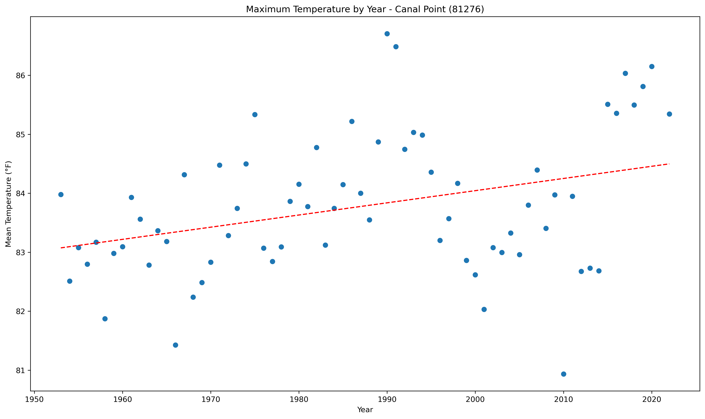
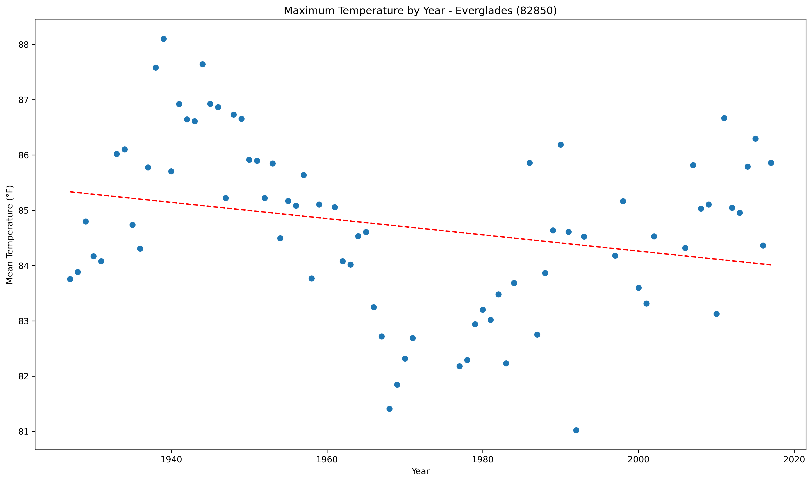
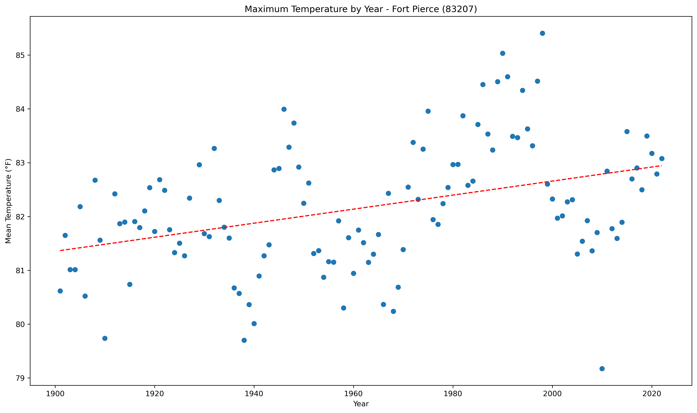
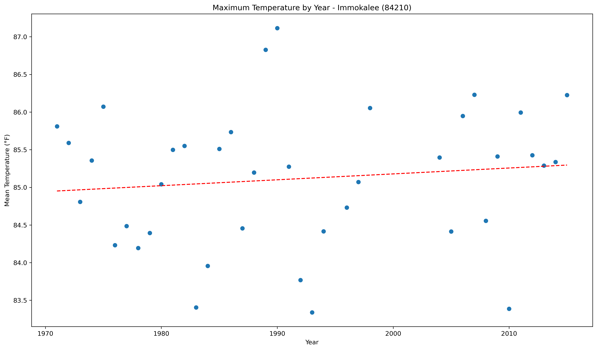
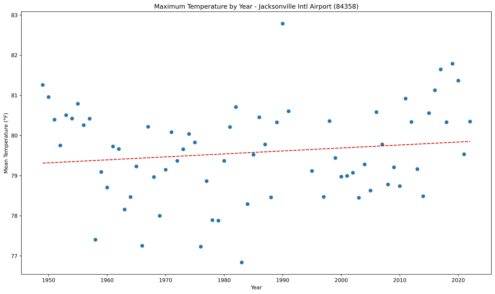
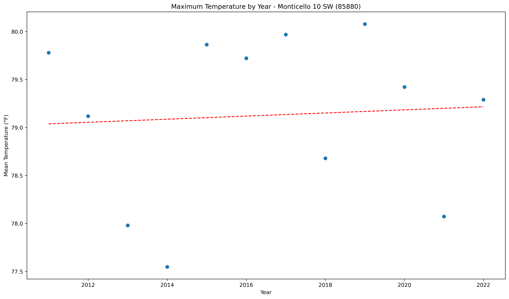
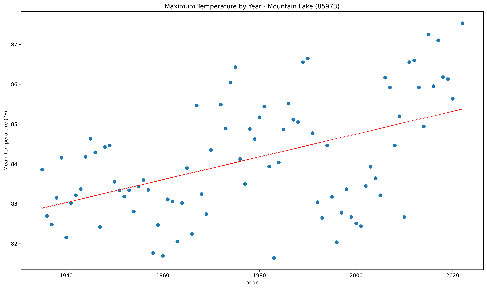
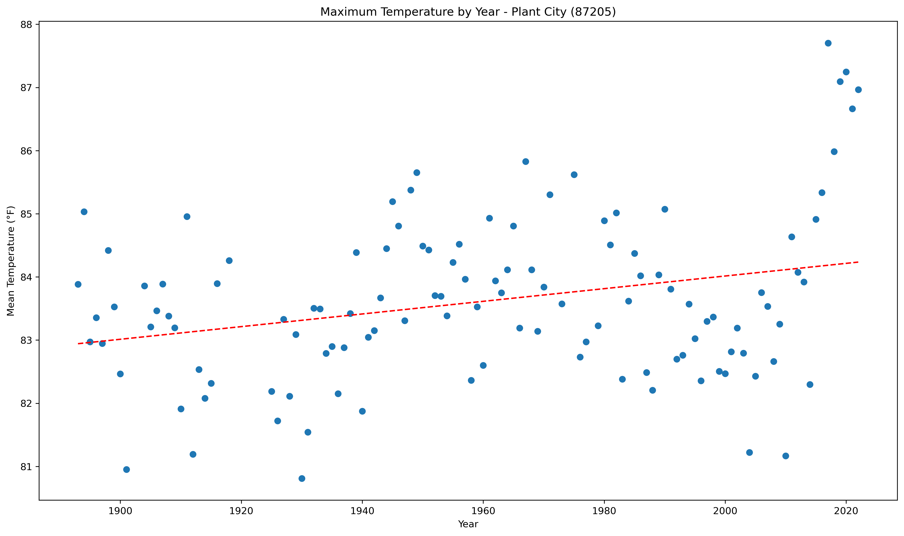

<!DOCTYPE html>
<html>
<head>
    
    <meta http-equiv="content-type" content="text/html; charset=UTF-8" />
    
        <script>
            L_NO_TOUCH = false;
            L_DISABLE_3D = false;
        </script>
    
    <style>html, body {width: 100%;height: 100%;margin: 0;padding: 0;}</style>
    <style>#map {position:absolute;top:0;bottom:0;right:0;left:0;}</style>
    <script src="https://cdn.jsdelivr.net/npm/leaflet@1.9.3/dist/leaflet.js"></script>
    <script src="https://code.jquery.com/jquery-1.12.4.min.js"></script>
    <script src="https://cdn.jsdelivr.net/npm/bootstrap@5.2.2/dist/js/bootstrap.bundle.min.js"></script>
    <script src="https://cdnjs.cloudflare.com/ajax/libs/Leaflet.awesome-markers/2.0.2/leaflet.awesome-markers.js"></script>
    <link rel="stylesheet" href="https://cdn.jsdelivr.net/npm/leaflet@1.9.3/dist/leaflet.css"/>
    <link rel="stylesheet" href="https://cdn.jsdelivr.net/npm/bootstrap@5.2.2/dist/css/bootstrap.min.css"/>
    <link rel="stylesheet" href="https://netdna.bootstrapcdn.com/bootstrap/3.0.0/css/bootstrap.min.css"/>
    <link rel="stylesheet" href="https://cdn.jsdelivr.net/npm/@fortawesome/fontawesome-free@6.2.0/css/all.min.css"/>
    <link rel="stylesheet" href="https://cdnjs.cloudflare.com/ajax/libs/Leaflet.awesome-markers/2.0.2/leaflet.awesome-markers.css"/>
    <link rel="stylesheet" href="https://cdn.jsdelivr.net/gh/python-visualization/folium/folium/templates/leaflet.awesome.rotate.min.css"/>
    
            <meta name="viewport" content="width=device-width,
                initial-scale=1.0, maximum-scale=1.0, user-scalable=no" />
            <style>
                #map_196a0bf146b0d6b154b207f9b4355e76 {
                    position: relative;
                    width: 100.0%;
                    height: 100.0%;
                    left: 0.0%;
                    top: 0.0%;
                }
                .leaflet-container { font-size: 1rem; }
            </style>
        
</head>
<body>
    
    
            <div class="folium-map" id="map_196a0bf146b0d6b154b207f9b4355e76" ></div>
        
</body>
<script>
    
    
            var map_196a0bf146b0d6b154b207f9b4355e76 = L.map(
                "map_196a0bf146b0d6b154b207f9b4355e76",
                {
                    center: [28.0, -82.5],
                    crs: L.CRS.EPSG3857,
                    zoom: 7,
                    zoomControl: false,
                    preferCanvas: false,
                }
            );

            

        
    
            var tile_layer_24c2265d9038095cb8cf88def06092f7 = L.tileLayer(
                "https://cartodb-basemaps-{s}.global.ssl.fastly.net/dark_all/{z}/{x}/{y}.png",
                {"attribution": "\u0026copy; \u003ca target=\"_blank\" href=\"http://www.openstreetmap.org/copyright\"\u003eOpenStreetMap\u003c/a\u003e contributors \u0026copy; \u003ca target=\"_blank\" href=\"http://cartodb.com/attributions\"\u003eCartoDB\u003c/a\u003e, CartoDB \u003ca target=\"_blank\" href =\"http://cartodb.com/attributions\"\u003eattributions\u003c/a\u003e", "detectRetina": false, "maxNativeZoom": 18, "maxZoom": 18, "minZoom": 7, "noWrap": false, "opacity": 1, "subdomains": "abc", "tms": false}
            ).addTo(map_196a0bf146b0d6b154b207f9b4355e76);
        
    
            var marker_23a1b7b46dc516b794adac04ceac8b66 = L.marker(
                [29.72, -85.03],
                {}
            ).addTo(map_196a0bf146b0d6b154b207f9b4355e76);
        
    
            var icon_ed24d673d5074e22399e09e4b60086f0 = L.AwesomeMarkers.icon(
                {"extraClasses": "fa-rotate-0", "icon": "info-sign", "iconColor": "white", "markerColor": "red", "prefix": "glyphicon"}
            );
            marker_23a1b7b46dc516b794adac04ceac8b66.setIcon(icon_ed24d673d5074e22399e09e4b60086f0);
        
    
        var popup_fae8fab08f0acabcc5adf7ea01902e6b = L.popup({"maxWidth": 1000, "minWidth": 500});

        
            
                var html_361f4d2de8408a87b944119ef7de6efc = $(`<div id="html_361f4d2de8408a87b944119ef7de6efc" style="width: 100.0%; height: 100.0%;"><b>Apalachicola Airport (80211)</b><br>lat: 29.72, lon: -85.03<br><a href='../../static/img/plots/trends/maxtemp_yearly/80211_max_trend_yearly.png' target='_BLANK'></a></div>`)[0];
                popup_fae8fab08f0acabcc5adf7ea01902e6b.setContent(html_361f4d2de8408a87b944119ef7de6efc);
            
        

        marker_23a1b7b46dc516b794adac04ceac8b66.bindPopup(popup_fae8fab08f0acabcc5adf7ea01902e6b)
        ;

        
    
    
            var marker_f0bab9a78990ec0357c3f4157226e9ad = L.marker(
                [27.22, -81.86],
                {}
            ).addTo(map_196a0bf146b0d6b154b207f9b4355e76);
        
    
            var icon_7c683374011541421fe8d0fb0325364e = L.AwesomeMarkers.icon(
                {"extraClasses": "fa-rotate-0", "icon": "info-sign", "iconColor": "white", "markerColor": "blue", "prefix": "glyphicon"}
            );
            marker_f0bab9a78990ec0357c3f4157226e9ad.setIcon(icon_7c683374011541421fe8d0fb0325364e);
        
    
        var popup_353ff6ad11e3987d2c7b09e195e30353 = L.popup({"maxWidth": 1000, "minWidth": 500});

        
            
                var html_bf7cd47934443f8dececdde36232b3bc = $(`<div id="html_bf7cd47934443f8dececdde36232b3bc" style="width: 100.0%; height: 100.0%;"><b>Arcadia (80228)</b><br>lat: 27.22, lon: -81.86<br><a href='../../static/img/plots/trends/maxtemp_yearly/80228_max_trend_yearly.png' target='_BLANK'></a></div>`)[0];
                popup_353ff6ad11e3987d2c7b09e195e30353.setContent(html_bf7cd47934443f8dececdde36232b3bc);
            
        

        marker_f0bab9a78990ec0357c3f4157226e9ad.bindPopup(popup_353ff6ad11e3987d2c7b09e195e30353)
        ;

        
    
    
            var marker_ffefb4d954c6633d8671b80926b8852f = L.marker(
                [27.18, -81.35],
                {}
            ).addTo(map_196a0bf146b0d6b154b207f9b4355e76);
        
    
            var icon_4b67a83828b0eba9bac92f922ed8ad01 = L.AwesomeMarkers.icon(
                {"extraClasses": "fa-rotate-0", "icon": "info-sign", "iconColor": "white", "markerColor": "red", "prefix": "glyphicon"}
            );
            marker_ffefb4d954c6633d8671b80926b8852f.setIcon(icon_4b67a83828b0eba9bac92f922ed8ad01);
        
    
        var popup_b5ef4654c8169cc7655153f85de9971c = L.popup({"maxWidth": 1000, "minWidth": 500});

        
            
                var html_34b1287f52179c2c7fb7fbef162ecced = $(`<div id="html_34b1287f52179c2c7fb7fbef162ecced" style="width: 100.0%; height: 100.0%;"><b>Archbold Bio Station (80236)</b><br>lat: 27.18, lon: -81.35<br><a href='../../static/img/plots/trends/maxtemp_yearly/80236_max_trend_yearly.png' target='_BLANK'></a></div>`)[0];
                popup_b5ef4654c8169cc7655153f85de9971c.setContent(html_34b1287f52179c2c7fb7fbef162ecced);
            
        

        marker_ffefb4d954c6633d8671b80926b8852f.bindPopup(popup_b5ef4654c8169cc7655153f85de9971c)
        ;

        
    
    
            var marker_bce6d1884132f979c55d8a2ba2566a72 = L.marker(
                [27.59, -81.53],
                {}
            ).addTo(map_196a0bf146b0d6b154b207f9b4355e76);
        
    
            var icon_cf65b9e5ea62e77246ea6424d6d1b9f6 = L.AwesomeMarkers.icon(
                {"extraClasses": "fa-rotate-0", "icon": "info-sign", "iconColor": "white", "markerColor": "orange", "prefix": "glyphicon"}
            );
            marker_bce6d1884132f979c55d8a2ba2566a72.setIcon(icon_cf65b9e5ea62e77246ea6424d6d1b9f6);
        
    
        var popup_4002c27828e69a7ace24a6f6f622fe13 = L.popup({"maxWidth": 1000, "minWidth": 500});

        
            
                var html_428bb4d3da57b0f6c454c1280497f3a0 = $(`<div id="html_428bb4d3da57b0f6c454c1280497f3a0" style="width: 100.0%; height: 100.0%;"><b>Avon Park 2 W (80369)</b><br>lat: 27.59, lon: -81.53<br><a href='../../static/img/plots/trends/maxtemp_yearly/80369_max_trend_yearly.png' target='_BLANK'></a></div>`)[0];
                popup_4002c27828e69a7ace24a6f6f622fe13.setContent(html_428bb4d3da57b0f6c454c1280497f3a0);
            
        

        marker_bce6d1884132f979c55d8a2ba2566a72.bindPopup(popup_4002c27828e69a7ace24a6f6f622fe13)
        ;

        
    
    
            var marker_9af7d4c3499bdc789e8be1b10e7199a4 = L.marker(
                [27.95, -81.79],
                {}
            ).addTo(map_196a0bf146b0d6b154b207f9b4355e76);
        
    
            var icon_312f0eceff46c50bf10374c061067435 = L.AwesomeMarkers.icon(
                {"extraClasses": "fa-rotate-0", "icon": "info-sign", "iconColor": "white", "markerColor": "orange", "prefix": "glyphicon"}
            );
            marker_9af7d4c3499bdc789e8be1b10e7199a4.setIcon(icon_312f0eceff46c50bf10374c061067435);
        
    
        var popup_f01051e7d2164e4c068265c83f443e37 = L.popup({"maxWidth": 1000, "minWidth": 500});

        
            
                var html_b6245aea8a25f2a0b91ee4089542c5e8 = $(`<div id="html_b6245aea8a25f2a0b91ee4089542c5e8" style="width: 100.0%; height: 100.0%;"><b>Bartow (80478)</b><br>lat: 27.95, lon: -81.79<br><a href='../../static/img/plots/trends/maxtemp_yearly/80478_max_trend_yearly.png' target='_BLANK'></a></div>`)[0];
                popup_f01051e7d2164e4c068265c83f443e37.setContent(html_b6245aea8a25f2a0b91ee4089542c5e8);
            
        

        marker_9af7d4c3499bdc789e8be1b10e7199a4.bindPopup(popup_f01051e7d2164e4c068265c83f443e37)
        ;

        
    
    
            var marker_93398b156f6dbe0ca2e6a2f49d006508 = L.marker(
                [26.7, -80.66],
                {}
            ).addTo(map_196a0bf146b0d6b154b207f9b4355e76);
        
    
            var icon_ef5c079787137dc7c6d5aaa9e559fc6c = L.AwesomeMarkers.icon(
                {"extraClasses": "fa-rotate-0", "icon": "info-sign", "iconColor": "white", "markerColor": "red", "prefix": "glyphicon"}
            );
            marker_93398b156f6dbe0ca2e6a2f49d006508.setIcon(icon_ef5c079787137dc7c6d5aaa9e559fc6c);
        
    
        var popup_1f6a39d00006c90a72c77b54909df4f1 = L.popup({"maxWidth": 1000, "minWidth": 500});

        
            
                var html_50a6a02c14d1319c88a332e0d6355c56 = $(`<div id="html_50a6a02c14d1319c88a332e0d6355c56" style="width: 100.0%; height: 100.0%;"><b>Belle Glade Airport (80611)</b><br>lat: 26.7, lon: -80.66<br><a href='../../static/img/plots/trends/maxtemp_yearly/80611_max_trend_yearly.png' target='_BLANK'></a></div>`)[0];
                popup_1f6a39d00006c90a72c77b54909df4f1.setContent(html_50a6a02c14d1319c88a332e0d6355c56);
            
        

        marker_93398b156f6dbe0ca2e6a2f49d006508.bindPopup(popup_1f6a39d00006c90a72c77b54909df4f1)
        ;

        
    
    
            var marker_09f22c8af1f9f9d5b92b5a5102a70aff = L.marker(
                [27.5, -82.57],
                {}
            ).addTo(map_196a0bf146b0d6b154b207f9b4355e76);
        
    
            var icon_b980b38bbf4536b7f99ff7fb997eac2c = L.AwesomeMarkers.icon(
                {"extraClasses": "fa-rotate-0", "icon": "info-sign", "iconColor": "white", "markerColor": "red", "prefix": "glyphicon"}
            );
            marker_09f22c8af1f9f9d5b92b5a5102a70aff.setIcon(icon_b980b38bbf4536b7f99ff7fb997eac2c);
        
    
        var popup_e4320cf8da05ed003a385e2933fb91b3 = L.popup({"maxWidth": 1000, "minWidth": 500});

        
            
                var html_69be2b038ebb515615afbb4ced7d1471 = $(`<div id="html_69be2b038ebb515615afbb4ced7d1471" style="width: 100.0%; height: 100.0%;"><b>Bradenton 5 ESE (80945)</b><br>lat: 27.5, lon: -82.57<br><a href='../../static/img/plots/trends/maxtemp_yearly/80945_max_trend_yearly.png' target='_BLANK'></a></div>`)[0];
                popup_e4320cf8da05ed003a385e2933fb91b3.setContent(html_69be2b038ebb515615afbb4ced7d1471);
            
        

        marker_09f22c8af1f9f9d5b92b5a5102a70aff.bindPopup(popup_e4320cf8da05ed003a385e2933fb91b3)
        ;

        
    
    
            var marker_cc0f1c786e53df52ea538d295dc0d69b = L.marker(
                [28.62, -82.37],
                {}
            ).addTo(map_196a0bf146b0d6b154b207f9b4355e76);
        
    
            var icon_156cfb34850c74beafea916aab9fc211 = L.AwesomeMarkers.icon(
                {"extraClasses": "fa-rotate-0", "icon": "info-sign", "iconColor": "white", "markerColor": "orange", "prefix": "glyphicon"}
            );
            marker_cc0f1c786e53df52ea538d295dc0d69b.setIcon(icon_156cfb34850c74beafea916aab9fc211);
        
    
        var popup_ea706cc0d5f89c60722a85596b4eeb93 = L.popup({"maxWidth": 1000, "minWidth": 500});

        
            
                var html_2eca8ec4304b12933dea8970d77535b1 = $(`<div id="html_2eca8ec4304b12933dea8970d77535b1" style="width: 100.0%; height: 100.0%;"><b>Chinsegut Hill (81046)</b><br>lat: 28.62, lon: -82.37<br><a href='../../static/img/plots/trends/maxtemp_yearly/81046_max_trend_yearly.png' target='_BLANK'></a></div>`)[0];
                popup_ea706cc0d5f89c60722a85596b4eeb93.setContent(html_2eca8ec4304b12933dea8970d77535b1);
            
        

        marker_cc0f1c786e53df52ea538d295dc0d69b.bindPopup(popup_ea706cc0d5f89c60722a85596b4eeb93)
        ;

        
    
    
            var marker_81a3899e20b7e1aa10b8a9692ded2b93 = L.marker(
                [28.66, -82.11],
                {}
            ).addTo(map_196a0bf146b0d6b154b207f9b4355e76);
        
    
            var icon_91d1e23d98caa380d46a328ff2ef79e5 = L.AwesomeMarkers.icon(
                {"extraClasses": "fa-rotate-0", "icon": "info-sign", "iconColor": "white", "markerColor": "blue", "prefix": "glyphicon"}
            );
            marker_81a3899e20b7e1aa10b8a9692ded2b93.setIcon(icon_91d1e23d98caa380d46a328ff2ef79e5);
        
    
        var popup_a2125f7f92d082bb0259dc660a35a592 = L.popup({"maxWidth": 1000, "minWidth": 500});

        
            
                var html_a7771ccdc01bd178e170e9bd9f12927d = $(`<div id="html_a7771ccdc01bd178e170e9bd9f12927d" style="width: 100.0%; height: 100.0%;"><b>Bushnell 1 E (81163)</b><br>lat: 28.66, lon: -82.11<br><a href='../../static/img/plots/trends/maxtemp_yearly/81163_max_trend_yearly.png' target='_BLANK'></a></div>`)[0];
                popup_a2125f7f92d082bb0259dc660a35a592.setContent(html_a7771ccdc01bd178e170e9bd9f12927d);
            
        

        marker_81a3899e20b7e1aa10b8a9692ded2b93.bindPopup(popup_a2125f7f92d082bb0259dc660a35a592)
        ;

        
    
    
            var marker_932486c4c35a09fa1062aa4e128d6125 = L.marker(
                [26.86, -80.63],
                {}
            ).addTo(map_196a0bf146b0d6b154b207f9b4355e76);
        
    
            var icon_a04e9f0cdec10169ddbfb7d149479e8c = L.AwesomeMarkers.icon(
                {"extraClasses": "fa-rotate-0", "icon": "info-sign", "iconColor": "white", "markerColor": "red", "prefix": "glyphicon"}
            );
            marker_932486c4c35a09fa1062aa4e128d6125.setIcon(icon_a04e9f0cdec10169ddbfb7d149479e8c);
        
    
        var popup_c8f012c4d8b72b7110504af26c805f4d = L.popup({"maxWidth": 1000, "minWidth": 500});

        
            
                var html_d0d098eefae1c5eb87a4540787cec136 = $(`<div id="html_d0d098eefae1c5eb87a4540787cec136" style="width: 100.0%; height: 100.0%;"><b>Canal Point (81276)</b><br>lat: 26.86, lon: -80.63<br><a href='../../static/img/plots/trends/maxtemp_yearly/81276_max_trend_yearly.png' target='_BLANK'></a></div>`)[0];
                popup_c8f012c4d8b72b7110504af26c805f4d.setContent(html_d0d098eefae1c5eb87a4540787cec136);
            
        

        marker_932486c4c35a09fa1062aa4e128d6125.bindPopup(popup_c8f012c4d8b72b7110504af26c805f4d)
        ;

        
    
    
            var marker_71884ee0a9623dd5efa6d157237f4343 = L.marker(
                [30.78, -85.54],
                {}
            ).addTo(map_196a0bf146b0d6b154b207f9b4355e76);
        
    
            var icon_144569460165ec3f788bab44378cf499 = L.AwesomeMarkers.icon(
                {"extraClasses": "fa-rotate-0", "icon": "info-sign", "iconColor": "white", "markerColor": "orange", "prefix": "glyphicon"}
            );
            marker_71884ee0a9623dd5efa6d157237f4343.setIcon(icon_144569460165ec3f788bab44378cf499);
        
    
        var popup_b51a4c7f464d4a5f3b838b426b782f05 = L.popup({"maxWidth": 1000, "minWidth": 500});

        
            
                var html_1f060fd3029d9e6482c7209f15569442 = $(`<div id="html_1f060fd3029d9e6482c7209f15569442" style="width: 100.0%; height: 100.0%;"><b>Chipley (81544)</b><br>lat: 30.78, lon: -85.54<br><a href='../../static/img/plots/trends/maxtemp_yearly/81544_max_trend_yearly.png' target='_BLANK'></a></div>`)[0];
                popup_b51a4c7f464d4a5f3b838b426b782f05.setContent(html_1f060fd3029d9e6482c7209f15569442);
            
        

        marker_71884ee0a9623dd5efa6d157237f4343.bindPopup(popup_b51a4c7f464d4a5f3b838b426b782f05)
        ;

        
    
    
            var marker_48b568b4cf61bf282482afa14ce87739 = L.marker(
                [28.56, -81.77],
                {}
            ).addTo(map_196a0bf146b0d6b154b207f9b4355e76);
        
    
            var icon_b37a43327e13ef62d198b4c40d88e806 = L.AwesomeMarkers.icon(
                {"extraClasses": "fa-rotate-0", "icon": "info-sign", "iconColor": "white", "markerColor": "red", "prefix": "glyphicon"}
            );
            marker_48b568b4cf61bf282482afa14ce87739.setIcon(icon_b37a43327e13ef62d198b4c40d88e806);
        
    
        var popup_7b6ad9b8268a0b49c237a21b48848dbd = L.popup({"maxWidth": 1000, "minWidth": 500});

        
            
                var html_5214fcc59e49f881cd86e364373347e0 = $(`<div id="html_5214fcc59e49f881cd86e364373347e0" style="width: 100.0%; height: 100.0%;"><b>Clermont 9 S (81641)</b><br>lat: 28.56, lon: -81.77<br><a href='../../static/img/plots/trends/maxtemp_yearly/81641_max_trend_yearly.png' target='_BLANK'></a></div>`)[0];
                popup_7b6ad9b8268a0b49c237a21b48848dbd.setContent(html_5214fcc59e49f881cd86e364373347e0);
            
        

        marker_48b568b4cf61bf282482afa14ce87739.bindPopup(popup_7b6ad9b8268a0b49c237a21b48848dbd)
        ;

        
    
    
            var marker_b7133cfdfd074d8c4790133d0cc9587c = L.marker(
                [29.43, -81.51],
                {}
            ).addTo(map_196a0bf146b0d6b154b207f9b4355e76);
        
    
            var icon_ef027e5dbfe022146c3f2d4481f1f4eb = L.AwesomeMarkers.icon(
                {"extraClasses": "fa-rotate-0", "icon": "info-sign", "iconColor": "white", "markerColor": "blue", "prefix": "glyphicon"}
            );
            marker_b7133cfdfd074d8c4790133d0cc9587c.setIcon(icon_ef027e5dbfe022146c3f2d4481f1f4eb);
        
    
        var popup_c08b86d60c00d0fa50cffb600fe18481 = L.popup({"maxWidth": 1000, "minWidth": 500});

        
            
                var html_bbd3466515d10fb10564573506db8f44 = $(`<div id="html_bbd3466515d10fb10564573506db8f44" style="width: 100.0%; height: 100.0%;"><b>Crescent City (81978)</b><br>lat: 29.43, lon: -81.51<br><a href='../../static/img/plots/trends/maxtemp_yearly/81978_max_trend_yearly.png' target='_BLANK'></a></div>`)[0];
                popup_c08b86d60c00d0fa50cffb600fe18481.setContent(html_bbd3466515d10fb10564573506db8f44);
            
        

        marker_b7133cfdfd074d8c4790133d0cc9587c.bindPopup(popup_c08b86d60c00d0fa50cffb600fe18481)
        ;

        
    
    
            var marker_9397fa9c3d08fa7f5969c377b31ae412 = L.marker(
                [30.78, -86.52],
                {}
            ).addTo(map_196a0bf146b0d6b154b207f9b4355e76);
        
    
            var icon_aacb7e9bead6e1604712be6c6f9d8daa = L.AwesomeMarkers.icon(
                {"extraClasses": "fa-rotate-0", "icon": "info-sign", "iconColor": "white", "markerColor": "red", "prefix": "glyphicon"}
            );
            marker_9397fa9c3d08fa7f5969c377b31ae412.setIcon(icon_aacb7e9bead6e1604712be6c6f9d8daa);
        
    
        var popup_351d0e046148550cad08f55ca7084d89 = L.popup({"maxWidth": 1000, "minWidth": 500});

        
            
                var html_9a08e00c158cea622a8db66a4c1763c1 = $(`<div id="html_9a08e00c158cea622a8db66a4c1763c1" style="width: 100.0%; height: 100.0%;"><b>Crestview Bob Sikes Airport (81986)</b><br>lat: 30.78, lon: -86.52<br><a href='../../static/img/plots/trends/maxtemp_yearly/81986_max_trend_yearly.png' target='_BLANK'></a></div>`)[0];
                popup_351d0e046148550cad08f55ca7084d89.setContent(html_9a08e00c158cea622a8db66a4c1763c1);
            
        

        marker_9397fa9c3d08fa7f5969c377b31ae412.bindPopup(popup_351d0e046148550cad08f55ca7084d89)
        ;

        
    
    
            var marker_03502bd62126a7c03e45fab533300280 = L.marker(
                [29.63, -83.13],
                {}
            ).addTo(map_196a0bf146b0d6b154b207f9b4355e76);
        
    
            var icon_063a80777b87395bf8506bdbcde7eddc = L.AwesomeMarkers.icon(
                {"extraClasses": "fa-rotate-0", "icon": "info-sign", "iconColor": "white", "markerColor": "blue", "prefix": "glyphicon"}
            );
            marker_03502bd62126a7c03e45fab533300280.setIcon(icon_063a80777b87395bf8506bdbcde7eddc);
        
    
        var popup_388521130cf36b0a17278632471f59cc = L.popup({"maxWidth": 1000, "minWidth": 500});

        
            
                var html_4d25a070e1e59e356d2b1fb2d701eb10 = $(`<div id="html_4d25a070e1e59e356d2b1fb2d701eb10" style="width: 100.0%; height: 100.0%;"><b>Cross City 1 E (82008)</b><br>lat: 29.63, lon: -83.13<br><a href='../../static/img/plots/trends/maxtemp_yearly/82008_max_trend_yearly.png' target='_BLANK'></a></div>`)[0];
                popup_388521130cf36b0a17278632471f59cc.setContent(html_4d25a070e1e59e356d2b1fb2d701eb10);
            
        

        marker_03502bd62126a7c03e45fab533300280.bindPopup(popup_388521130cf36b0a17278632471f59cc)
        ;

        
    
    
            var marker_480f8700ad97b60673d3fce386ee58c9 = L.marker(
                [29.16, -81.0],
                {}
            ).addTo(map_196a0bf146b0d6b154b207f9b4355e76);
        
    
            var icon_b612ee3e075787fbcde1c0c4a41316bf = L.AwesomeMarkers.icon(
                {"extraClasses": "fa-rotate-0", "icon": "info-sign", "iconColor": "white", "markerColor": "orange", "prefix": "glyphicon"}
            );
            marker_480f8700ad97b60673d3fce386ee58c9.setIcon(icon_b612ee3e075787fbcde1c0c4a41316bf);
        
    
        var popup_bd2e8714b3daa43e9f91966e99f9d1cf = L.popup({"maxWidth": 1000, "minWidth": 500});

        
            
                var html_9c77ad02a374a4431d9f0754f919156a = $(`<div id="html_9c77ad02a374a4431d9f0754f919156a" style="width: 100.0%; height: 100.0%;"><b>Daytona Beach (82150)</b><br>lat: 29.16, lon: -81<br><a href='../../static/img/plots/trends/maxtemp_yearly/82150_max_trend_yearly.png' target='_BLANK'></a></div>`)[0];
                popup_bd2e8714b3daa43e9f91966e99f9d1cf.setContent(html_9c77ad02a374a4431d9f0754f919156a);
            
        

        marker_480f8700ad97b60673d3fce386ee58c9.bindPopup(popup_bd2e8714b3daa43e9f91966e99f9d1cf)
        ;

        
    
    
            var marker_42c7a406eec2a603ad3b0d1fc9f58879 = L.marker(
                [29.18, -81.06],
                {}
            ).addTo(map_196a0bf146b0d6b154b207f9b4355e76);
        
    
            var icon_ec82a185a920839b09c901c95a902ce0 = L.AwesomeMarkers.icon(
                {"extraClasses": "fa-rotate-0", "icon": "info-sign", "iconColor": "white", "markerColor": "red", "prefix": "glyphicon"}
            );
            marker_42c7a406eec2a603ad3b0d1fc9f58879.setIcon(icon_ec82a185a920839b09c901c95a902ce0);
        
    
        var popup_ec843bffdac36c628f1c19a9027cefce = L.popup({"maxWidth": 1000, "minWidth": 500});

        
            
                var html_8298cbc4b6d92f3d071012f6d331208f = $(`<div id="html_8298cbc4b6d92f3d071012f6d331208f" style="width: 100.0%; height: 100.0%;"><b>Daytona Beach Intl Airport (82158)</b><br>lat: 29.18, lon: -81.06<br><a href='../../static/img/plots/trends/maxtemp_yearly/82158_max_trend_yearly.png' target='_BLANK'></a></div>`)[0];
                popup_ec843bffdac36c628f1c19a9027cefce.setContent(html_8298cbc4b6d92f3d071012f6d331208f);
            
        

        marker_42c7a406eec2a603ad3b0d1fc9f58879.bindPopup(popup_ec843bffdac36c628f1c19a9027cefce)
        ;

        
    
    
            var marker_f08bb1dbfea6cee3eaab0990e45164e5 = L.marker(
                [30.72, -86.12],
                {}
            ).addTo(map_196a0bf146b0d6b154b207f9b4355e76);
        
    
            var icon_cbba8a5a2aa411ee709ed2314bc4fa1b = L.AwesomeMarkers.icon(
                {"extraClasses": "fa-rotate-0", "icon": "info-sign", "iconColor": "white", "markerColor": "blue", "prefix": "glyphicon"}
            );
            marker_f08bb1dbfea6cee3eaab0990e45164e5.setIcon(icon_cbba8a5a2aa411ee709ed2314bc4fa1b);
        
    
        var popup_6b1e6adc2fcf341e2b1a5b6659a8d928 = L.popup({"maxWidth": 1000, "minWidth": 500});

        
            
                var html_1ba2c5d733e6608be3a26a7e95de01fe = $(`<div id="html_1ba2c5d733e6608be3a26a7e95de01fe" style="width: 100.0%; height: 100.0%;"><b>De Funiak Springs 1 E (82220)</b><br>lat: 30.72, lon: -86.12<br><a href='../../static/img/plots/trends/maxtemp_yearly/82220_max_trend_yearly.png' target='_BLANK'></a></div>`)[0];
                popup_6b1e6adc2fcf341e2b1a5b6659a8d928.setContent(html_1ba2c5d733e6608be3a26a7e95de01fe);
            
        

        marker_f08bb1dbfea6cee3eaab0990e45164e5.bindPopup(popup_6b1e6adc2fcf341e2b1a5b6659a8d928)
        ;

        
    
    
            var marker_3f285ba5a7bbb1fe9a6e644865e3d104 = L.marker(
                [29.03, -81.3],
                {}
            ).addTo(map_196a0bf146b0d6b154b207f9b4355e76);
        
    
            var icon_0fedd95f95e6bed2727bd028135c5421 = L.AwesomeMarkers.icon(
                {"extraClasses": "fa-rotate-0", "icon": "info-sign", "iconColor": "white", "markerColor": "blue", "prefix": "glyphicon"}
            );
            marker_3f285ba5a7bbb1fe9a6e644865e3d104.setIcon(icon_0fedd95f95e6bed2727bd028135c5421);
        
    
        var popup_2a2981cad99ff52b8f5f606f4de475e8 = L.popup({"maxWidth": 1000, "minWidth": 500});

        
            
                var html_a82e6698bab9f35d061e0f422e524e6a = $(`<div id="html_a82e6698bab9f35d061e0f422e524e6a" style="width: 100.0%; height: 100.0%;"><b>Deland 1 SSE (82229)</b><br>lat: 29.03, lon: -81.3<br><a href='../../static/img/plots/trends/maxtemp_yearly/82229_max_trend_yearly.png' target='_BLANK'></a></div>`)[0];
                popup_2a2981cad99ff52b8f5f606f4de475e8.setContent(html_a82e6698bab9f35d061e0f422e524e6a);
            
        

        marker_3f285ba5a7bbb1fe9a6e644865e3d104.bindPopup(popup_2a2981cad99ff52b8f5f606f4de475e8)
        ;

        
    
    
            var marker_f013fbdb71694ac7093a081ec9eeca9e = L.marker(
                [30.71, -85.72],
                {}
            ).addTo(map_196a0bf146b0d6b154b207f9b4355e76);
        
    
            var icon_1d4462968ffd41c016de1d9814eacd30 = L.AwesomeMarkers.icon(
                {"extraClasses": "fa-rotate-0", "icon": "info-sign", "iconColor": "white", "markerColor": "red", "prefix": "glyphicon"}
            );
            marker_f013fbdb71694ac7093a081ec9eeca9e.setIcon(icon_1d4462968ffd41c016de1d9814eacd30);
        
    
        var popup_e3cab8e9bc3359a8be94c813e64ea177 = L.popup({"maxWidth": 1000, "minWidth": 500});

        
            
                var html_8a543aee7e7730f7eab0a7c546cbe6a2 = $(`<div id="html_8a543aee7e7730f7eab0a7c546cbe6a2" style="width: 100.0%; height: 100.0%;"><b>Devils Garden (82298)</b><br>lat: 30.71, lon: -85.72<br><a href='../../static/img/plots/trends/maxtemp_yearly/82298_max_trend_yearly.png' target='_BLANK'></a></div>`)[0];
                popup_e3cab8e9bc3359a8be94c813e64ea177.setContent(html_8a543aee7e7730f7eab0a7c546cbe6a2);
            
        

        marker_f013fbdb71694ac7093a081ec9eeca9e.bindPopup(popup_e3cab8e9bc3359a8be94c813e64ea177)
        ;

        
    
    
            var marker_32a4e296ee0784e12ecc017c2f4d9e36 = L.marker(
                [25.29, -80.89],
                {}
            ).addTo(map_196a0bf146b0d6b154b207f9b4355e76);
        
    
            var icon_fd1007e401e1dfdeb149b4fe6471c733 = L.AwesomeMarkers.icon(
                {"extraClasses": "fa-rotate-0", "icon": "info-sign", "iconColor": "white", "markerColor": "blue", "prefix": "glyphicon"}
            );
            marker_32a4e296ee0784e12ecc017c2f4d9e36.setIcon(icon_fd1007e401e1dfdeb149b4fe6471c733);
        
    
        var popup_4abdf10488e3538ca491104188f4d411 = L.popup({"maxWidth": 1000, "minWidth": 500});

        
            
                var html_fe1796e86f4d73bcb641e1b8822d299f = $(`<div id="html_fe1796e86f4d73bcb641e1b8822d299f" style="width: 100.0%; height: 100.0%;"><b>Everglades (82850)</b><br>lat: 25.29, lon: -80.89<br><a href='../../static/img/plots/trends/maxtemp_yearly/82850_max_trend_yearly.png' target='_BLANK'></a></div>`)[0];
                popup_4abdf10488e3538ca491104188f4d411.setContent(html_fe1796e86f4d73bcb641e1b8822d299f);
            
        

        marker_32a4e296ee0784e12ecc017c2f4d9e36.bindPopup(popup_4abdf10488e3538ca491104188f4d411)
        ;

        
    
    
            var marker_5d6b94e686edbf42e99c7ad124b1d0c3 = L.marker(
                [29.75, -81.54],
                {}
            ).addTo(map_196a0bf146b0d6b154b207f9b4355e76);
        
    
            var icon_86b8358bc29c94faf49b2f060f664588 = L.AwesomeMarkers.icon(
                {"extraClasses": "fa-rotate-0", "icon": "info-sign", "iconColor": "white", "markerColor": "blue", "prefix": "glyphicon"}
            );
            marker_5d6b94e686edbf42e99c7ad124b1d0c3.setIcon(icon_86b8358bc29c94faf49b2f060f664588);
        
    
        var popup_ff82fe3cc2e40cc611df7ff96316458a = L.popup({"maxWidth": 1000, "minWidth": 500});

        
            
                var html_acb5f4593647a2b380fc6df412521dac = $(`<div id="html_acb5f4593647a2b380fc6df412521dac" style="width: 100.0%; height: 100.0%;"><b>Federal Point (82915)</b><br>lat: 29.75, lon: -81.54<br><a href='../../static/img/plots/trends/maxtemp_yearly/82915_max_trend_yearly.png' target='_BLANK'></a></div>`)[0];
                popup_ff82fe3cc2e40cc611df7ff96316458a.setContent(html_acb5f4593647a2b380fc6df412521dac);
            
        

        marker_5d6b94e686edbf42e99c7ad124b1d0c3.bindPopup(popup_ff82fe3cc2e40cc611df7ff96316458a)
        ;

        
    
    
            var marker_6e228f01080233892d1c1d3d2629b16b = L.marker(
                [30.62, -81.46],
                {}
            ).addTo(map_196a0bf146b0d6b154b207f9b4355e76);
        
    
            var icon_9c832cb8d1522f7b2b34255c280b8104 = L.AwesomeMarkers.icon(
                {"extraClasses": "fa-rotate-0", "icon": "info-sign", "iconColor": "white", "markerColor": "blue", "prefix": "glyphicon"}
            );
            marker_6e228f01080233892d1c1d3d2629b16b.setIcon(icon_9c832cb8d1522f7b2b34255c280b8104);
        
    
        var popup_896a944902ef66ce5281a7fd2eb9b5a0 = L.popup({"maxWidth": 1000, "minWidth": 500});

        
            
                var html_bd6cfa4939a9b95eb95b902b903c3f39 = $(`<div id="html_bd6cfa4939a9b95eb95b902b903c3f39" style="width: 100.0%; height: 100.0%;"><b>Fernandina Beach (82944)</b><br>lat: 30.62, lon: -81.46<br><a href='../../static/img/plots/trends/maxtemp_yearly/82944_max_trend_yearly.png' target='_BLANK'></a></div>`)[0];
                popup_896a944902ef66ce5281a7fd2eb9b5a0.setContent(html_bd6cfa4939a9b95eb95b902b903c3f39);
            
        

        marker_6e228f01080233892d1c1d3d2629b16b.bindPopup(popup_896a944902ef66ce5281a7fd2eb9b5a0)
        ;

        
    
    
            var marker_a1eaf1ad5d81de970009626d0a2e9bba = L.marker(
                [25.14, -80.93],
                {}
            ).addTo(map_196a0bf146b0d6b154b207f9b4355e76);
        
    
            var icon_c1a662d6e5105353987c3864bd33f5cf = L.AwesomeMarkers.icon(
                {"extraClasses": "fa-rotate-0", "icon": "info-sign", "iconColor": "white", "markerColor": "red", "prefix": "glyphicon"}
            );
            marker_a1eaf1ad5d81de970009626d0a2e9bba.setIcon(icon_c1a662d6e5105353987c3864bd33f5cf);
        
    
        var popup_7fa9d855006aae245b4be78a328e9ff2 = L.popup({"maxWidth": 1000, "minWidth": 500});

        
            
                var html_1938a10837d0ac72e93f986a94b6c46a = $(`<div id="html_1938a10837d0ac72e93f986a94b6c46a" style="width: 100.0%; height: 100.0%;"><b>Flamingo Ranger Station (83020)</b><br>lat: 25.14, lon: -80.93<br><a href='../../static/img/plots/trends/maxtemp_yearly/83020_max_trend_yearly.png' target='_BLANK'></a></div>`)[0];
                popup_7fa9d855006aae245b4be78a328e9ff2.setContent(html_1938a10837d0ac72e93f986a94b6c46a);
            
        

        marker_a1eaf1ad5d81de970009626d0a2e9bba.bindPopup(popup_7fa9d855006aae245b4be78a328e9ff2)
        ;

        
    
    
            var marker_f1c52e0e6e49dca72bf558fd02ff7910 = L.marker(
                [27.53, -80.81],
                {}
            ).addTo(map_196a0bf146b0d6b154b207f9b4355e76);
        
    
            var icon_ae272d616ab954649152eb8b4a451e61 = L.AwesomeMarkers.icon(
                {"extraClasses": "fa-rotate-0", "icon": "info-sign", "iconColor": "white", "markerColor": "orange", "prefix": "glyphicon"}
            );
            marker_f1c52e0e6e49dca72bf558fd02ff7910.setIcon(icon_ae272d616ab954649152eb8b4a451e61);
        
    
        var popup_45ec6a5273adc7ff45d2c6ebc973db94 = L.popup({"maxWidth": 1000, "minWidth": 500});

        
            
                var html_c3f6d6097c8b79894befd684aca9de59 = $(`<div id="html_c3f6d6097c8b79894befd684aca9de59" style="width: 100.0%; height: 100.0%;"><b>Fort Drum (83137)</b><br>lat: 27.53, lon: -80.81<br><a href='../../static/img/plots/trends/maxtemp_yearly/83137_max_trend_yearly.png' target='_BLANK'></a></div>`)[0];
                popup_45ec6a5273adc7ff45d2c6ebc973db94.setContent(html_c3f6d6097c8b79894befd684aca9de59);
            
        

        marker_f1c52e0e6e49dca72bf558fd02ff7910.bindPopup(popup_45ec6a5273adc7ff45d2c6ebc973db94)
        ;

        
    
    
            var marker_7cb839632e1a85d68b16e86d7fbc6327 = L.marker(
                [27.61, -81.94],
                {}
            ).addTo(map_196a0bf146b0d6b154b207f9b4355e76);
        
    
            var icon_5e7e448e74f09d882a9f5b655a87bec0 = L.AwesomeMarkers.icon(
                {"extraClasses": "fa-rotate-0", "icon": "info-sign", "iconColor": "white", "markerColor": "red", "prefix": "glyphicon"}
            );
            marker_7cb839632e1a85d68b16e86d7fbc6327.setIcon(icon_5e7e448e74f09d882a9f5b655a87bec0);
        
    
        var popup_861afeec21968bbc08d0ad2e78a32904 = L.popup({"maxWidth": 1000, "minWidth": 500});

        
            
                var html_85583b65d8aec9d3ad3ddb9970ab3d21 = $(`<div id="html_85583b65d8aec9d3ad3ddb9970ab3d21" style="width: 100.0%; height: 100.0%;"><b>Fort Green 12 WSW (83153)</b><br>lat: 27.61, lon: -81.94<br><a href='../../static/img/plots/trends/maxtemp_yearly/83153_max_trend_yearly.png' target='_BLANK'></a></div>`)[0];
                popup_861afeec21968bbc08d0ad2e78a32904.setContent(html_85583b65d8aec9d3ad3ddb9970ab3d21);
            
        

        marker_7cb839632e1a85d68b16e86d7fbc6327.bindPopup(popup_861afeec21968bbc08d0ad2e78a32904)
        ;

        
    
    
            var marker_7784cf495baafd1b1cc117ea46baba62 = L.marker(
                [26.07, -80.15],
                {}
            ).addTo(map_196a0bf146b0d6b154b207f9b4355e76);
        
    
            var icon_cf9e226a2f2122caa3eedc6561db73f0 = L.AwesomeMarkers.icon(
                {"extraClasses": "fa-rotate-0", "icon": "info-sign", "iconColor": "white", "markerColor": "blue", "prefix": "glyphicon"}
            );
            marker_7784cf495baafd1b1cc117ea46baba62.setIcon(icon_cf9e226a2f2122caa3eedc6561db73f0);
        
    
        var popup_9eccb6a8db1573a6994c7e910426b603 = L.popup({"maxWidth": 1000, "minWidth": 500});

        
            
                var html_e1193249d1ba896580ee3adacb22a5ad = $(`<div id="html_e1193249d1ba896580ee3adacb22a5ad" style="width: 100.0%; height: 100.0%;"><b>Ft Lauderdale (83163)</b><br>lat: 26.07, lon: -80.15<br><a href='../../static/img/plots/trends/maxtemp_yearly/83163_max_trend_yearly.png' target='_BLANK'></a></div>`)[0];
                popup_9eccb6a8db1573a6994c7e910426b603.setContent(html_e1193249d1ba896580ee3adacb22a5ad);
            
        

        marker_7784cf495baafd1b1cc117ea46baba62.bindPopup(popup_9eccb6a8db1573a6994c7e910426b603)
        ;

        
    
    
            var marker_749e4765f68ac91b5d6d24fab0f8a907 = L.marker(
                [26.13, -80.11],
                {}
            ).addTo(map_196a0bf146b0d6b154b207f9b4355e76);
        
    
            var icon_fccd47e24e58dc500d194c78969aec2c = L.AwesomeMarkers.icon(
                {"extraClasses": "fa-rotate-0", "icon": "info-sign", "iconColor": "white", "markerColor": "red", "prefix": "glyphicon"}
            );
            marker_749e4765f68ac91b5d6d24fab0f8a907.setIcon(icon_fccd47e24e58dc500d194c78969aec2c);
        
    
        var popup_31deda0d7461343013fd2bc792b1a692 = L.popup({"maxWidth": 1000, "minWidth": 500});

        
            
                var html_05b810f9910e1e481ea7317b831eb32e = $(`<div id="html_05b810f9910e1e481ea7317b831eb32e" style="width: 100.0%; height: 100.0%;"><b>Ft Lauderdale Beach (83168)</b><br>lat: 26.13, lon: -80.11<br><a href='../../static/img/plots/trends/maxtemp_yearly/83168_max_trend_yearly.png' target='_BLANK'></a></div>`)[0];
                popup_31deda0d7461343013fd2bc792b1a692.setContent(html_05b810f9910e1e481ea7317b831eb32e);
            
        

        marker_749e4765f68ac91b5d6d24fab0f8a907.bindPopup(popup_31deda0d7461343013fd2bc792b1a692)
        ;

        
    
    
            var marker_262de985d0bcb892c521651fa725fca2 = L.marker(
                [26.59, -81.87],
                {}
            ).addTo(map_196a0bf146b0d6b154b207f9b4355e76);
        
    
            var icon_9096c5338bd66447c47ad69e2383a169 = L.AwesomeMarkers.icon(
                {"extraClasses": "fa-rotate-0", "icon": "info-sign", "iconColor": "white", "markerColor": "red", "prefix": "glyphicon"}
            );
            marker_262de985d0bcb892c521651fa725fca2.setIcon(icon_9096c5338bd66447c47ad69e2383a169);
        
    
        var popup_432336498a8ca308b102dba4eaf3412f = L.popup({"maxWidth": 1000, "minWidth": 500});

        
            
                var html_82b81f2e31387607d82de544fdfdc668 = $(`<div id="html_82b81f2e31387607d82de544fdfdc668" style="width: 100.0%; height: 100.0%;"><b>Fort Myers Page Field Airport (83186)</b><br>lat: 26.59, lon: -81.87<br><a href='../../static/img/plots/trends/maxtemp_yearly/83186_max_trend_yearly.png' target='_BLANK'></a></div>`)[0];
                popup_432336498a8ca308b102dba4eaf3412f.setContent(html_82b81f2e31387607d82de544fdfdc668);
            
        

        marker_262de985d0bcb892c521651fa725fca2.bindPopup(popup_432336498a8ca308b102dba4eaf3412f)
        ;

        
    
    
            var marker_09d84f3b75f9bce9a06c43958e7b2d27 = L.marker(
                [27.44, -80.34],
                {}
            ).addTo(map_196a0bf146b0d6b154b207f9b4355e76);
        
    
            var icon_8a64a5fbce0289976be3f5e4fafed846 = L.AwesomeMarkers.icon(
                {"extraClasses": "fa-rotate-0", "icon": "info-sign", "iconColor": "white", "markerColor": "orange", "prefix": "glyphicon"}
            );
            marker_09d84f3b75f9bce9a06c43958e7b2d27.setIcon(icon_8a64a5fbce0289976be3f5e4fafed846);
        
    
        var popup_b01e3d6a41a39b159f830fe7cfc2d845 = L.popup({"maxWidth": 1000, "minWidth": 500});

        
            
                var html_bf2a80ca8d0dbbcfc19292e4e57ab515 = $(`<div id="html_bf2a80ca8d0dbbcfc19292e4e57ab515" style="width: 100.0%; height: 100.0%;"><b>Fort Pierce (83207)</b><br>lat: 27.44, lon: -80.34<br><a href='../../static/img/plots/trends/maxtemp_yearly/83207_max_trend_yearly.png' target='_BLANK'></a></div>`)[0];
                popup_b01e3d6a41a39b159f830fe7cfc2d845.setContent(html_bf2a80ca8d0dbbcfc19292e4e57ab515);
            
        

        marker_09d84f3b75f9bce9a06c43958e7b2d27.bindPopup(popup_b01e3d6a41a39b159f830fe7cfc2d845)
        ;

        
    
    
            var marker_2a194a32100139151a96704c10a13e67 = L.marker(
                [29.69, -82.28],
                {}
            ).addTo(map_196a0bf146b0d6b154b207f9b4355e76);
        
    
            var icon_2c1bedf977b0fd1e9bb7caca6b87f8ff = L.AwesomeMarkers.icon(
                {"extraClasses": "fa-rotate-0", "icon": "info-sign", "iconColor": "white", "markerColor": "red", "prefix": "glyphicon"}
            );
            marker_2a194a32100139151a96704c10a13e67.setIcon(icon_2c1bedf977b0fd1e9bb7caca6b87f8ff);
        
    
        var popup_f6b4794a1c46464aa8768bf29c8e782e = L.popup({"maxWidth": 1000, "minWidth": 500});

        
            
                var html_ea938d564ab27af6a494fd7acf355fd1 = $(`<div id="html_ea938d564ab27af6a494fd7acf355fd1" style="width: 100.0%; height: 100.0%;"><b>Gainesville Regional Airport (83326)</b><br>lat: 29.69, lon: -82.28<br><a href='../../static/img/plots/trends/maxtemp_yearly/83326_max_trend_yearly.png' target='_BLANK'></a></div>`)[0];
                popup_f6b4794a1c46464aa8768bf29c8e782e.setContent(html_ea938d564ab27af6a494fd7acf355fd1);
            
        

        marker_2a194a32100139151a96704c10a13e67.bindPopup(popup_f6b4794a1c46464aa8768bf29c8e782e)
        ;

        
    
    
            var marker_69d41a6aeac1943809e4a06e9699db35 = L.marker(
                [30.28, -82.16],
                {}
            ).addTo(map_196a0bf146b0d6b154b207f9b4355e76);
        
    
            var icon_24c89688b69154fbcd1f7b36553eeff6 = L.AwesomeMarkers.icon(
                {"extraClasses": "fa-rotate-0", "icon": "info-sign", "iconColor": "white", "markerColor": "blue", "prefix": "glyphicon"}
            );
            marker_69d41a6aeac1943809e4a06e9699db35.setIcon(icon_24c89688b69154fbcd1f7b36553eeff6);
        
    
        var popup_381e10711ad1cf7d13e9ed0e28c9e25f = L.popup({"maxWidth": 1000, "minWidth": 500});

        
            
                var html_cee07e55323e9cb6d49d56b8de7f646a = $(`<div id="html_cee07e55323e9cb6d49d56b8de7f646a" style="width: 100.0%; height: 100.0%;"><b>Glen St Mary 1 W (83470)</b><br>lat: 30.28, lon: -82.16<br><a href='../../static/img/plots/trends/maxtemp_yearly/83470_max_trend_yearly.png' target='_BLANK'></a></div>`)[0];
                popup_381e10711ad1cf7d13e9ed0e28c9e25f.setContent(html_cee07e55323e9cb6d49d56b8de7f646a);
            
        

        marker_69d41a6aeac1943809e4a06e9699db35.bindPopup(popup_381e10711ad1cf7d13e9ed0e28c9e25f)
        ;

        
    
    
            var marker_88e279623fd12d94c8ea0850a2abe22c = L.marker(
                [29.72, -81.51],
                {}
            ).addTo(map_196a0bf146b0d6b154b207f9b4355e76);
        
    
            var icon_c24cc1bc1cb42c08575fabff11452d8a = L.AwesomeMarkers.icon(
                {"extraClasses": "fa-rotate-0", "icon": "info-sign", "iconColor": "white", "markerColor": "red", "prefix": "glyphicon"}
            );
            marker_88e279623fd12d94c8ea0850a2abe22c.setIcon(icon_c24cc1bc1cb42c08575fabff11452d8a);
        
    
        var popup_92fc4efc417f426e4e5f7055a9ae3ed9 = L.popup({"maxWidth": 1000, "minWidth": 500});

        
            
                var html_24213f4330ea4993c4a7af8ee7e62a15 = $(`<div id="html_24213f4330ea4993c4a7af8ee7e62a15" style="width: 100.0%; height: 100.0%;"><b>Hastings 4 NE (83874)</b><br>lat: 29.72, lon: -81.51<br><a href='../../static/img/plots/trends/maxtemp_yearly/83874_max_trend_yearly.png' target='_BLANK'></a></div>`)[0];
                popup_92fc4efc417f426e4e5f7055a9ae3ed9.setContent(html_24213f4330ea4993c4a7af8ee7e62a15);
            
        

        marker_88e279623fd12d94c8ea0850a2abe22c.bindPopup(popup_92fc4efc417f426e4e5f7055a9ae3ed9)
        ;

        
    
    
            var marker_31db6b24e1888472624d9f9c13345a28 = L.marker(
                [25.86, -80.28],
                {}
            ).addTo(map_196a0bf146b0d6b154b207f9b4355e76);
        
    
            var icon_09c60c37e7d2aec0573117891c5a445c = L.AwesomeMarkers.icon(
                {"extraClasses": "fa-rotate-0", "icon": "info-sign", "iconColor": "white", "markerColor": "orange", "prefix": "glyphicon"}
            );
            marker_31db6b24e1888472624d9f9c13345a28.setIcon(icon_09c60c37e7d2aec0573117891c5a445c);
        
    
        var popup_af984053648523e7100e1799b2ceab31 = L.popup({"maxWidth": 1000, "minWidth": 500});

        
            
                var html_afd3dfa3d77c9698a8ff7a532f1c5529 = $(`<div id="html_afd3dfa3d77c9698a8ff7a532f1c5529" style="width: 100.0%; height: 100.0%;"><b>Hialeah (83909)</b><br>lat: 25.86, lon: -80.28<br><a href='../../static/img/plots/trends/maxtemp_yearly/83909_max_trend_yearly.png' target='_BLANK'></a></div>`)[0];
                popup_af984053648523e7100e1799b2ceab31.setContent(html_afd3dfa3d77c9698a8ff7a532f1c5529);
            
        

        marker_31db6b24e1888472624d9f9c13345a28.bindPopup(popup_af984053648523e7100e1799b2ceab31)
        ;

        
    
    
            var marker_97e79d72f03384348b46db0d17b091d2 = L.marker(
                [29.83, -82.6],
                {}
            ).addTo(map_196a0bf146b0d6b154b207f9b4355e76);
        
    
            var icon_ce98fb5b4fa94de134d01f99b97a1781 = L.AwesomeMarkers.icon(
                {"extraClasses": "fa-rotate-0", "icon": "info-sign", "iconColor": "white", "markerColor": "blue", "prefix": "glyphicon"}
            );
            marker_97e79d72f03384348b46db0d17b091d2.setIcon(icon_ce98fb5b4fa94de134d01f99b97a1781);
        
    
        var popup_3de6c38efed4dfefa09f099ec2add9e1 = L.popup({"maxWidth": 1000, "minWidth": 500});

        
            
                var html_6eee63f0e1c6d00e2c02a7066e36c863 = $(`<div id="html_6eee63f0e1c6d00e2c02a7066e36c863" style="width: 100.0%; height: 100.0%;"><b>High Springs (83956)</b><br>lat: 29.83, lon: -82.6<br><a href='../../static/img/plots/trends/maxtemp_yearly/83956_max_trend_yearly.png' target='_BLANK'></a></div>`)[0];
                popup_3de6c38efed4dfefa09f099ec2add9e1.setContent(html_6eee63f0e1c6d00e2c02a7066e36c863);
            
        

        marker_97e79d72f03384348b46db0d17b091d2.bindPopup(popup_3de6c38efed4dfefa09f099ec2add9e1)
        ;

        
    
    
            var marker_37a8fc6f1e6dacc7004ed7e3481f96ea = L.marker(
                [28.14, -82.23],
                {}
            ).addTo(map_196a0bf146b0d6b154b207f9b4355e76);
        
    
            var icon_f2ab350e4c98021e787e6bd760d36582 = L.AwesomeMarkers.icon(
                {"extraClasses": "fa-rotate-0", "icon": "info-sign", "iconColor": "white", "markerColor": "red", "prefix": "glyphicon"}
            );
            marker_37a8fc6f1e6dacc7004ed7e3481f96ea.setIcon(icon_f2ab350e4c98021e787e6bd760d36582);
        
    
        var popup_94d7a74ccbaac0accfbffc778054feef = L.popup({"maxWidth": 1000, "minWidth": 500});

        
            
                var html_7ff6ae0060c1d1df0a444345fba4b6f6 = $(`<div id="html_7ff6ae0060c1d1df0a444345fba4b6f6" style="width: 100.0%; height: 100.0%;"><b>Hillsborough River State Park (83986)</b><br>lat: 28.14, lon: -82.23<br><a href='../../static/img/plots/trends/maxtemp_yearly/83986_max_trend_yearly.png' target='_BLANK'></a></div>`)[0];
                popup_94d7a74ccbaac0accfbffc778054feef.setContent(html_7ff6ae0060c1d1df0a444345fba4b6f6);
            
        

        marker_37a8fc6f1e6dacc7004ed7e3481f96ea.bindPopup(popup_94d7a74ccbaac0accfbffc778054feef)
        ;

        
    
    
            var marker_ed4269c0ba0fe611e693285bd4581979 = L.marker(
                [26.42, -81.42],
                {}
            ).addTo(map_196a0bf146b0d6b154b207f9b4355e76);
        
    
            var icon_4b458da5afbc8488e2e8e23479e2c189 = L.AwesomeMarkers.icon(
                {"extraClasses": "fa-rotate-0", "icon": "info-sign", "iconColor": "white", "markerColor": "orange", "prefix": "glyphicon"}
            );
            marker_ed4269c0ba0fe611e693285bd4581979.setIcon(icon_4b458da5afbc8488e2e8e23479e2c189);
        
    
        var popup_a59efe96f96b08f248e2b4a2a02c3e8f = L.popup({"maxWidth": 1000, "minWidth": 500});

        
            
                var html_aa3d6aca01a14278dcccde047c1159cd = $(`<div id="html_aa3d6aca01a14278dcccde047c1159cd" style="width: 100.0%; height: 100.0%;"><b>Immokalee (84210)</b><br>lat: 26.42, lon: -81.42<br><a href='../../static/img/plots/trends/maxtemp_yearly/84210_max_trend_yearly.png' target='_BLANK'></a></div>`)[0];
                popup_a59efe96f96b08f248e2b4a2a02c3e8f.setContent(html_aa3d6aca01a14278dcccde047c1159cd);
            
        

        marker_ed4269c0ba0fe611e693285bd4581979.bindPopup(popup_a59efe96f96b08f248e2b4a2a02c3e8f)
        ;

        
    
    
            var marker_924ead9dd09f52788c79c9d447720ded = L.marker(
                [28.84, -82.34],
                {}
            ).addTo(map_196a0bf146b0d6b154b207f9b4355e76);
        
    
            var icon_7c77ef90a2acede7f6cf18aeb4cffff1 = L.AwesomeMarkers.icon(
                {"extraClasses": "fa-rotate-0", "icon": "info-sign", "iconColor": "white", "markerColor": "orange", "prefix": "glyphicon"}
            );
            marker_924ead9dd09f52788c79c9d447720ded.setIcon(icon_7c77ef90a2acede7f6cf18aeb4cffff1);
        
    
        var popup_e4c0725ef180cfa867df26d43fa3abc6 = L.popup({"maxWidth": 1000, "minWidth": 500});

        
            
                var html_c313259f893d04d7a3e64b60b8730200 = $(`<div id="html_c313259f893d04d7a3e64b60b8730200" style="width: 100.0%; height: 100.0%;"><b>Iverness 3 SE (84289)</b><br>lat: 28.84, lon: -82.34<br><a href='../../static/img/plots/trends/maxtemp_yearly/84289_max_trend_yearly.png' target='_BLANK'></a></div>`)[0];
                popup_e4c0725ef180cfa867df26d43fa3abc6.setContent(html_c313259f893d04d7a3e64b60b8730200);
            
        

        marker_924ead9dd09f52788c79c9d447720ded.bindPopup(popup_e4c0725ef180cfa867df26d43fa3abc6)
        ;

        
    
    
            var marker_4cbfa4e6c93f0d57b3693460be24dd63 = L.marker(
                [30.49, -81.68],
                {}
            ).addTo(map_196a0bf146b0d6b154b207f9b4355e76);
        
    
            var icon_6f66a61f83f5bb208c7469839b1c675f = L.AwesomeMarkers.icon(
                {"extraClasses": "fa-rotate-0", "icon": "info-sign", "iconColor": "white", "markerColor": "orange", "prefix": "glyphicon"}
            );
            marker_4cbfa4e6c93f0d57b3693460be24dd63.setIcon(icon_6f66a61f83f5bb208c7469839b1c675f);
        
    
        var popup_ef9b44058d880be0edaa1ac157e05076 = L.popup({"maxWidth": 1000, "minWidth": 500});

        
            
                var html_e3e534b04237c470c39f198389aed8bd = $(`<div id="html_e3e534b04237c470c39f198389aed8bd" style="width: 100.0%; height: 100.0%;"><b>Jacksonville Intl Airport (84358)</b><br>lat: 30.49, lon: -81.68<br><a href='../../static/img/plots/trends/maxtemp_yearly/84358_max_trend_yearly.png' target='_BLANK'></a></div>`)[0];
                popup_ef9b44058d880be0edaa1ac157e05076.setContent(html_e3e534b04237c470c39f198389aed8bd);
            
        

        marker_4cbfa4e6c93f0d57b3693460be24dd63.bindPopup(popup_ef9b44058d880be0edaa1ac157e05076)
        ;

        
    
    
            var marker_a42b20f37324b76f987db2af2a02465c = L.marker(
                [30.28, -81.39],
                {}
            ).addTo(map_196a0bf146b0d6b154b207f9b4355e76);
        
    
            var icon_9d79a9a6eaa63a52d5eafa5cdb4e25eb = L.AwesomeMarkers.icon(
                {"extraClasses": "fa-rotate-0", "icon": "info-sign", "iconColor": "white", "markerColor": "orange", "prefix": "glyphicon"}
            );
            marker_a42b20f37324b76f987db2af2a02465c.setIcon(icon_9d79a9a6eaa63a52d5eafa5cdb4e25eb);
        
    
        var popup_ab41562c28c15a75d84dea64944a1893 = L.popup({"maxWidth": 1000, "minWidth": 500});

        
            
                var html_b95d928dc63ae2774a91e199a593b13e = $(`<div id="html_b95d928dc63ae2774a91e199a593b13e" style="width: 100.0%; height: 100.0%;"><b>Jacksonville Beach (84366)</b><br>lat: 30.28, lon: -81.39<br><a href='../../static/img/plots/trends/maxtemp_yearly/84366_max_trend_yearly.png' target='_BLANK'></a></div>`)[0];
                popup_ab41562c28c15a75d84dea64944a1893.setContent(html_b95d928dc63ae2774a91e199a593b13e);
            
        

        marker_a42b20f37324b76f987db2af2a02465c.bindPopup(popup_ab41562c28c15a75d84dea64944a1893)
        ;

        
    
    
            var marker_8ea23377c8d8de27292f05ec7d13fa6c = L.marker(
                [30.52, -82.94],
                {}
            ).addTo(map_196a0bf146b0d6b154b207f9b4355e76);
        
    
            var icon_63cc27a29ae3121294c61d6ed754a55a = L.AwesomeMarkers.icon(
                {"extraClasses": "fa-rotate-0", "icon": "info-sign", "iconColor": "white", "markerColor": "darkblue", "prefix": "glyphicon"}
            );
            marker_8ea23377c8d8de27292f05ec7d13fa6c.setIcon(icon_63cc27a29ae3121294c61d6ed754a55a);
        
    
        var popup_dd42fe58c73d7e65892fee358b249a15 = L.popup({"maxWidth": 1000, "minWidth": 500});

        
            
                var html_35fb3378c0d4492085e5dbc664ebdd78 = $(`<div id="html_35fb3378c0d4492085e5dbc664ebdd78" style="width: 100.0%; height: 100.0%;"><b>Jasper (84394)</b><br>lat: 30.52, lon: -82.94<br><a href='../../static/img/plots/trends/maxtemp_yearly/84394_max_trend_yearly.png' target='_BLANK'></a></div>`)[0];
                popup_dd42fe58c73d7e65892fee358b249a15.setContent(html_35fb3378c0d4492085e5dbc664ebdd78);
            
        

        marker_8ea23377c8d8de27292f05ec7d13fa6c.bindPopup(popup_dd42fe58c73d7e65892fee358b249a15)
        ;

        
    
    
            var marker_dfc92b7203d055a6c5d89a624060c6ca = L.marker(
                [24.55, -81.76],
                {}
            ).addTo(map_196a0bf146b0d6b154b207f9b4355e76);
        
    
            var icon_de1067665adc363f562e090ab52b1631 = L.AwesomeMarkers.icon(
                {"extraClasses": "fa-rotate-0", "icon": "info-sign", "iconColor": "white", "markerColor": "orange", "prefix": "glyphicon"}
            );
            marker_dfc92b7203d055a6c5d89a624060c6ca.setIcon(icon_de1067665adc363f562e090ab52b1631);
        
    
        var popup_105942f37afebb1e2bc2aba0ff507e1e = L.popup({"maxWidth": 1000, "minWidth": 500});

        
            
                var html_91a1923168e29ac84825e61d78bdb2e5 = $(`<div id="html_91a1923168e29ac84825e61d78bdb2e5" style="width: 100.0%; height: 100.0%;"><b>Key West Intl Airport (84570)</b><br>lat: 24.55, lon: -81.76<br><a href='../../static/img/plots/trends/maxtemp_yearly/84570_max_trend_yearly.png' target='_BLANK'></a></div>`)[0];
                popup_105942f37afebb1e2bc2aba0ff507e1e.setContent(html_91a1923168e29ac84825e61d78bdb2e5);
            
        

        marker_dfc92b7203d055a6c5d89a624060c6ca.bindPopup(popup_105942f37afebb1e2bc2aba0ff507e1e)
        ;

        
    
    
            var marker_37404d2ae2cee0c58da11087a45cf24e = L.marker(
                [28.29, -81.41],
                {}
            ).addTo(map_196a0bf146b0d6b154b207f9b4355e76);
        
    
            var icon_10217de8ea4d3a726e4e137fa3439b7e = L.AwesomeMarkers.icon(
                {"extraClasses": "fa-rotate-0", "icon": "info-sign", "iconColor": "white", "markerColor": "red", "prefix": "glyphicon"}
            );
            marker_37404d2ae2cee0c58da11087a45cf24e.setIcon(icon_10217de8ea4d3a726e4e137fa3439b7e);
        
    
        var popup_9c6a16c668c3148c89f781bd966698de = L.popup({"maxWidth": 1000, "minWidth": 500});

        
            
                var html_4cb9e67c03629e1cf4dcc6d35a4c0fbf = $(`<div id="html_4cb9e67c03629e1cf4dcc6d35a4c0fbf" style="width: 100.0%; height: 100.0%;"><b>Kissimmee (84625)</b><br>lat: 28.29, lon: -81.41<br><a href='../../static/img/plots/trends/maxtemp_yearly/84625_max_trend_yearly.png' target='_BLANK'></a></div>`)[0];
                popup_9c6a16c668c3148c89f781bd966698de.setContent(html_4cb9e67c03629e1cf4dcc6d35a4c0fbf);
            
        

        marker_37404d2ae2cee0c58da11087a45cf24e.bindPopup(popup_9c6a16c668c3148c89f781bd966698de)
        ;

        
    
    
            var marker_bbd53c7821325f84ff6b1b748d106c66 = L.marker(
                [26.71, -81.46],
                {}
            ).addTo(map_196a0bf146b0d6b154b207f9b4355e76);
        
    
            var icon_4b178cb13730b1f2cca64dc3fed1ea2f = L.AwesomeMarkers.icon(
                {"extraClasses": "fa-rotate-0", "icon": "info-sign", "iconColor": "white", "markerColor": "orange", "prefix": "glyphicon"}
            );
            marker_bbd53c7821325f84ff6b1b748d106c66.setIcon(icon_4b178cb13730b1f2cca64dc3fed1ea2f);
        
    
        var popup_23d3e6cf6ca38ceae3f34594662b1eaf = L.popup({"maxWidth": 1000, "minWidth": 500});

        
            
                var html_2c98f1898ea8760e608fee0f90423e36 = $(`<div id="html_2c98f1898ea8760e608fee0f90423e36" style="width: 100.0%; height: 100.0%;"><b>La Belle (84662)</b><br>lat: 26.71, lon: -81.46<br><a href='../../static/img/plots/trends/maxtemp_yearly/84662_max_trend_yearly.png' target='_BLANK'></a></div>`)[0];
                popup_23d3e6cf6ca38ceae3f34594662b1eaf.setContent(html_2c98f1898ea8760e608fee0f90423e36);
            
        

        marker_bbd53c7821325f84ff6b1b748d106c66.bindPopup(popup_23d3e6cf6ca38ceae3f34594662b1eaf)
        ;

        
    
    
            var marker_fc95c638d2b3508b6ce14d95b7da1213 = L.marker(
                [30.12, -82.64],
                {}
            ).addTo(map_196a0bf146b0d6b154b207f9b4355e76);
        
    
            var icon_f514c907347caac8c9f3eacf1f1f42f4 = L.AwesomeMarkers.icon(
                {"extraClasses": "fa-rotate-0", "icon": "info-sign", "iconColor": "white", "markerColor": "blue", "prefix": "glyphicon"}
            );
            marker_fc95c638d2b3508b6ce14d95b7da1213.setIcon(icon_f514c907347caac8c9f3eacf1f1f42f4);
        
    
        var popup_eec7aabd31ad8df231e6a9ba0f5eb197 = L.popup({"maxWidth": 1000, "minWidth": 500});

        
            
                var html_6186d656b1b3de296b67ba927327ef37 = $(`<div id="html_6186d656b1b3de296b67ba927327ef37" style="width: 100.0%; height: 100.0%;"><b>Lake City 2 E (84731)</b><br>lat: 30.12, lon: -82.64<br><a href='../../static/img/plots/trends/maxtemp_yearly/84731_max_trend_yearly.png' target='_BLANK'></a></div>`)[0];
                popup_eec7aabd31ad8df231e6a9ba0f5eb197.setContent(html_6186d656b1b3de296b67ba927327ef37);
            
        

        marker_fc95c638d2b3508b6ce14d95b7da1213.bindPopup(popup_eec7aabd31ad8df231e6a9ba0f5eb197)
        ;

        
    
    
            var marker_6d6bdd649e0c3b50c3691a85cc720fe3 = L.marker(
                [26.88, -81.78],
                {}
            ).addTo(map_196a0bf146b0d6b154b207f9b4355e76);
        
    
            var icon_24892548a444489ec8ab6cb463760e7b = L.AwesomeMarkers.icon(
                {"extraClasses": "fa-rotate-0", "icon": "info-sign", "iconColor": "white", "markerColor": "darkblue", "prefix": "glyphicon"}
            );
            marker_6d6bdd649e0c3b50c3691a85cc720fe3.setIcon(icon_24892548a444489ec8ab6cb463760e7b);
        
    
        var popup_23a8956e2efe0a76909584cb8f8695da = L.popup({"maxWidth": 1000, "minWidth": 500});

        
            
                var html_6bb0ab97491c2f38f72645b4d1cbb9cd = $(`<div id="html_6bb0ab97491c2f38f72645b4d1cbb9cd" style="width: 100.0%; height: 100.0%;"><b>Lisbon (85076)</b><br>lat: 26.88, lon: -81.78<br><a href='../../static/img/plots/trends/maxtemp_yearly/85076_max_trend_yearly.png' target='_BLANK'></a></div>`)[0];
                popup_23a8956e2efe0a76909584cb8f8695da.setContent(html_6bb0ab97491c2f38f72645b4d1cbb9cd);
            
        

        marker_6d6bdd649e0c3b50c3691a85cc720fe3.bindPopup(popup_23a8956e2efe0a76909584cb8f8695da)
        ;

        
    
    
            var marker_ffd01e0ce8c67b4e65d2984b32aa640a = L.marker(
                [30.29, -82.99],
                {}
            ).addTo(map_196a0bf146b0d6b154b207f9b4355e76);
        
    
            var icon_594085fc3c11017353538f2b7160fe23 = L.AwesomeMarkers.icon(
                {"extraClasses": "fa-rotate-0", "icon": "info-sign", "iconColor": "white", "markerColor": "red", "prefix": "glyphicon"}
            );
            marker_ffd01e0ce8c67b4e65d2984b32aa640a.setIcon(icon_594085fc3c11017353538f2b7160fe23);
        
    
        var popup_d233c5bb370da51655c381f9533fffd4 = L.popup({"maxWidth": 1000, "minWidth": 500});

        
            
                var html_97b4c6020ea9f100e0c39a61f7972821 = $(`<div id="html_97b4c6020ea9f100e0c39a61f7972821" style="width: 100.0%; height: 100.0%;"><b>Live Oak (85099)</b><br>lat: 30.29, lon: -82.99<br><a href='../../static/img/plots/trends/maxtemp_yearly/85099_max_trend_yearly.png' target='_BLANK'></a></div>`)[0];
                popup_d233c5bb370da51655c381f9533fffd4.setContent(html_97b4c6020ea9f100e0c39a61f7972821);
            
        

        marker_ffd01e0ce8c67b4e65d2984b32aa640a.bindPopup(popup_d233c5bb370da51655c381f9533fffd4)
        ;

        
    
    
            var marker_cf3da37edd7b5d52db35feba234f85ee = L.marker(
                [30.48, -83.24],
                {}
            ).addTo(map_196a0bf146b0d6b154b207f9b4355e76);
        
    
            var icon_1428d5d41670f191272de2dff0bf18d5 = L.AwesomeMarkers.icon(
                {"extraClasses": "fa-rotate-0", "icon": "info-sign", "iconColor": "white", "markerColor": "blue", "prefix": "glyphicon"}
            );
            marker_cf3da37edd7b5d52db35feba234f85ee.setIcon(icon_1428d5d41670f191272de2dff0bf18d5);
        
    
        var popup_5e7b152b7ab9cf9d230f4e36e28023b5 = L.popup({"maxWidth": 1000, "minWidth": 500});

        
            
                var html_9952a7adfcbe1f87df556dbc89139d4f = $(`<div id="html_9952a7adfcbe1f87df556dbc89139d4f" style="width: 100.0%; height: 100.0%;"><b>Madison (85275)</b><br>lat: 30.48, lon: -83.24<br><a href='../../static/img/plots/trends/maxtemp_yearly/85275_max_trend_yearly.png' target='_BLANK'></a></div>`)[0];
                popup_5e7b152b7ab9cf9d230f4e36e28023b5.setContent(html_9952a7adfcbe1f87df556dbc89139d4f);
            
        

        marker_cf3da37edd7b5d52db35feba234f85ee.bindPopup(popup_5e7b152b7ab9cf9d230f4e36e28023b5)
        ;

        
    
    
            var marker_c39ca3526e624662b39c05deac251f89 = L.marker(
                [30.05, -83.18],
                {}
            ).addTo(map_196a0bf146b0d6b154b207f9b4355e76);
        
    
            var icon_7a174e8b3d37668cf01216b9254bccbb = L.AwesomeMarkers.icon(
                {"extraClasses": "fa-rotate-0", "icon": "info-sign", "iconColor": "white", "markerColor": "orange", "prefix": "glyphicon"}
            );
            marker_c39ca3526e624662b39c05deac251f89.setIcon(icon_7a174e8b3d37668cf01216b9254bccbb);
        
    
        var popup_c1878719aecb8c6df4fd18a15b1bba95 = L.popup({"maxWidth": 1000, "minWidth": 500});

        
            
                var html_88c4e118e1db2748fadd2d5c050e23ca = $(`<div id="html_88c4e118e1db2748fadd2d5c050e23ca" style="width: 100.0%; height: 100.0%;"><b>Mayo (85539)</b><br>lat: 30.05, lon: -83.18<br><a href='../../static/img/plots/trends/maxtemp_yearly/85539_max_trend_yearly.png' target='_BLANK'></a></div>`)[0];
                popup_c1878719aecb8c6df4fd18a15b1bba95.setContent(html_88c4e118e1db2748fadd2d5c050e23ca);
            
        

        marker_c39ca3526e624662b39c05deac251f89.bindPopup(popup_c1878719aecb8c6df4fd18a15b1bba95)
        ;

        
    
    
            var marker_bf67e610086a7e0403b6a555a42c200e = L.marker(
                [28.11, -80.66],
                {}
            ).addTo(map_196a0bf146b0d6b154b207f9b4355e76);
        
    
            var icon_8109f148e83dd2a5bc2ca56df36ff612 = L.AwesomeMarkers.icon(
                {"extraClasses": "fa-rotate-0", "icon": "info-sign", "iconColor": "white", "markerColor": "darkblue", "prefix": "glyphicon"}
            );
            marker_bf67e610086a7e0403b6a555a42c200e.setIcon(icon_8109f148e83dd2a5bc2ca56df36ff612);
        
    
        var popup_b810ee22d26a7551c550fe2304f7b53d = L.popup({"maxWidth": 1000, "minWidth": 500});

        
            
                var html_54a99bfbe4ac57aaa8848a24f3379785 = $(`<div id="html_54a99bfbe4ac57aaa8848a24f3379785" style="width: 100.0%; height: 100.0%;"><b>Melbourne WFO (85612)</b><br>lat: 28.11, lon: -80.66<br><a href='../../static/img/plots/trends/maxtemp_yearly/85612_max_trend_yearly.png' target='_BLANK'></a></div>`)[0];
                popup_b810ee22d26a7551c550fe2304f7b53d.setContent(html_54a99bfbe4ac57aaa8848a24f3379785);
            
        

        marker_bf67e610086a7e0403b6a555a42c200e.bindPopup(popup_b810ee22d26a7551c550fe2304f7b53d)
        ;

        
    
    
            var marker_9d3d89d2b9bc36cf539d8f219b4b4f3c = L.marker(
                [25.79, -80.14],
                {}
            ).addTo(map_196a0bf146b0d6b154b207f9b4355e76);
        
    
            var icon_18738fc816e8d28df28202a424e76ff6 = L.AwesomeMarkers.icon(
                {"extraClasses": "fa-rotate-0", "icon": "info-sign", "iconColor": "white", "markerColor": "orange", "prefix": "glyphicon"}
            );
            marker_9d3d89d2b9bc36cf539d8f219b4b4f3c.setIcon(icon_18738fc816e8d28df28202a424e76ff6);
        
    
        var popup_71dfb65b76eee450b38efc4a85a8726c = L.popup({"maxWidth": 1000, "minWidth": 500});

        
            
                var html_60451b8ede54f27760aa598f531775a6 = $(`<div id="html_60451b8ede54f27760aa598f531775a6" style="width: 100.0%; height: 100.0%;"><b>Miami Beach (85658)</b><br>lat: 25.79, lon: -80.14<br><a href='../../static/img/plots/trends/maxtemp_yearly/85658_max_trend_yearly.png' target='_BLANK'></a></div>`)[0];
                popup_71dfb65b76eee450b38efc4a85a8726c.setContent(html_60451b8ede54f27760aa598f531775a6);
            
        

        marker_9d3d89d2b9bc36cf539d8f219b4b4f3c.bindPopup(popup_71dfb65b76eee450b38efc4a85a8726c)
        ;

        
    
    
            var marker_2096616d17f8e1db54c1a1a946292bd9 = L.marker(
                [25.79, -80.28],
                {}
            ).addTo(map_196a0bf146b0d6b154b207f9b4355e76);
        
    
            var icon_04c047c21409904bc426a0a7937e9bd5 = L.AwesomeMarkers.icon(
                {"extraClasses": "fa-rotate-0", "icon": "info-sign", "iconColor": "white", "markerColor": "red", "prefix": "glyphicon"}
            );
            marker_2096616d17f8e1db54c1a1a946292bd9.setIcon(icon_04c047c21409904bc426a0a7937e9bd5);
        
    
        var popup_9b351c396ba1542f71180a45f9021e27 = L.popup({"maxWidth": 1000, "minWidth": 500});

        
            
                var html_844ac142f2617e262ae0e9690c2a4ee5 = $(`<div id="html_844ac142f2617e262ae0e9690c2a4ee5" style="width: 100.0%; height: 100.0%;"><b>Miami Intl Airport (85663)</b><br>lat: 25.79, lon: -80.28<br><a href='../../static/img/plots/trends/maxtemp_yearly/85663_max_trend_yearly.png' target='_BLANK'></a></div>`)[0];
                popup_9b351c396ba1542f71180a45f9021e27.setContent(html_844ac142f2617e262ae0e9690c2a4ee5);
            
        

        marker_2096616d17f8e1db54c1a1a946292bd9.bindPopup(popup_9b351c396ba1542f71180a45f9021e27)
        ;

        
    
    
            var marker_4eee94afd7fc292270ad9e2863c21a99 = L.marker(
                [30.29, -83.46],
                {}
            ).addTo(map_196a0bf146b0d6b154b207f9b4355e76);
        
    
            var icon_ed66b41ea36b997a4735323ae9f397c7 = L.AwesomeMarkers.icon(
                {"extraClasses": "fa-rotate-0", "icon": "info-sign", "iconColor": "white", "markerColor": "blue", "prefix": "glyphicon"}
            );
            marker_4eee94afd7fc292270ad9e2863c21a99.setIcon(icon_ed66b41ea36b997a4735323ae9f397c7);
        
    
        var popup_b30f228d1bdd58986cf12f2d90fb8b05 = L.popup({"maxWidth": 1000, "minWidth": 500});

        
            
                var html_fafff0ce93456ebf339939c801fa022b = $(`<div id="html_fafff0ce93456ebf339939c801fa022b" style="width: 100.0%; height: 100.0%;"><b>Monticello 5 SE (85879)</b><br>lat: 30.29, lon: -83.46<br><a href='../../static/img/plots/trends/maxtemp_yearly/85879_max_trend_yearly.png' target='_BLANK'></a></div>`)[0];
                popup_b30f228d1bdd58986cf12f2d90fb8b05.setContent(html_fafff0ce93456ebf339939c801fa022b);
            
        

        marker_4eee94afd7fc292270ad9e2863c21a99.bindPopup(popup_b30f228d1bdd58986cf12f2d90fb8b05)
        ;

        
    
    
            var marker_48153cc7b27f69a5c579ec5c797084cb = L.marker(
                [30.55, -83.87],
                {}
            ).addTo(map_196a0bf146b0d6b154b207f9b4355e76);
        
    
            var icon_e33ee69c2937442f5745f25068917dc8 = L.AwesomeMarkers.icon(
                {"extraClasses": "fa-rotate-0", "icon": "info-sign", "iconColor": "white", "markerColor": "orange", "prefix": "glyphicon"}
            );
            marker_48153cc7b27f69a5c579ec5c797084cb.setIcon(icon_e33ee69c2937442f5745f25068917dc8);
        
    
        var popup_157fd707baad2b7ebcb141eba85b4b49 = L.popup({"maxWidth": 1000, "minWidth": 500});

        
            
                var html_d753eb1ee4793529e85173e23e8d5c45 = $(`<div id="html_d753eb1ee4793529e85173e23e8d5c45" style="width: 100.0%; height: 100.0%;"><b>Monticello 10 SW (85880)</b><br>lat: 30.55, lon: -83.87<br><a href='../../static/img/plots/trends/maxtemp_yearly/85880_max_trend_yearly.png' target='_BLANK'></a></div>`)[0];
                popup_157fd707baad2b7ebcb141eba85b4b49.setContent(html_d753eb1ee4793529e85173e23e8d5c45);
            
        

        marker_48153cc7b27f69a5c579ec5c797084cb.bindPopup(popup_157fd707baad2b7ebcb141eba85b4b49)
        ;

        
    
    
            var marker_a5f3a5aaf4c9fc927efa83af296a06a9 = L.marker(
                [26.84, -81.09],
                {}
            ).addTo(map_196a0bf146b0d6b154b207f9b4355e76);
        
    
            var icon_48570747f8f1d41b9993e65ebd004efc = L.AwesomeMarkers.icon(
                {"extraClasses": "fa-rotate-0", "icon": "info-sign", "iconColor": "white", "markerColor": "orange", "prefix": "glyphicon"}
            );
            marker_a5f3a5aaf4c9fc927efa83af296a06a9.setIcon(icon_48570747f8f1d41b9993e65ebd004efc);
        
    
        var popup_ad49c4606b27f05fe5166fc89a48b054 = L.popup({"maxWidth": 1000, "minWidth": 500});

        
            
                var html_ba716ba8eea36b6762ceaa9f36d0fe31 = $(`<div id="html_ba716ba8eea36b6762ceaa9f36d0fe31" style="width: 100.0%; height: 100.0%;"><b>Moore Haven Lock 1 (85895)</b><br>lat: 26.84, lon: -81.09<br><a href='../../static/img/plots/trends/maxtemp_yearly/85895_max_trend_yearly.png' target='_BLANK'></a></div>`)[0];
                popup_ad49c4606b27f05fe5166fc89a48b054.setContent(html_ba716ba8eea36b6762ceaa9f36d0fe31);
            
        

        marker_a5f3a5aaf4c9fc927efa83af296a06a9.bindPopup(popup_ad49c4606b27f05fe5166fc89a48b054)
        ;

        
    
    
            var marker_d4f60e5515eb59b81c108a17738e8f82 = L.marker(
                [27.93, -81.59],
                {}
            ).addTo(map_196a0bf146b0d6b154b207f9b4355e76);
        
    
            var icon_479f86fbb13768443168c307d8cbd230 = L.AwesomeMarkers.icon(
                {"extraClasses": "fa-rotate-0", "icon": "info-sign", "iconColor": "white", "markerColor": "red", "prefix": "glyphicon"}
            );
            marker_d4f60e5515eb59b81c108a17738e8f82.setIcon(icon_479f86fbb13768443168c307d8cbd230);
        
    
        var popup_ea77ef361025902c31f31d7b572ab514 = L.popup({"maxWidth": 1000, "minWidth": 500});

        
            
                var html_5261b5a36895bd867bca06fda5b8e70d = $(`<div id="html_5261b5a36895bd867bca06fda5b8e70d" style="width: 100.0%; height: 100.0%;"><b>Mountain Lake (85973)</b><br>lat: 27.93, lon: -81.59<br><a href='../../static/img/plots/trends/maxtemp_yearly/85973_max_trend_yearly.png' target='_BLANK'></a></div>`)[0];
                popup_ea77ef361025902c31f31d7b572ab514.setContent(html_5261b5a36895bd867bca06fda5b8e70d);
            
        

        marker_d4f60e5515eb59b81c108a17738e8f82.bindPopup(popup_ea77ef361025902c31f31d7b572ab514)
        ;

        
    
    
            var marker_1e75cccc03e0cbccbc6da020ceaf3c94 = L.marker(
                [27.2, -82.25],
                {}
            ).addTo(map_196a0bf146b0d6b154b207f9b4355e76);
        
    
            var icon_d7c4fb0e38a055499bbc19d929565c04 = L.AwesomeMarkers.icon(
                {"extraClasses": "fa-rotate-0", "icon": "info-sign", "iconColor": "white", "markerColor": "red", "prefix": "glyphicon"}
            );
            marker_1e75cccc03e0cbccbc6da020ceaf3c94.setIcon(icon_d7c4fb0e38a055499bbc19d929565c04);
        
    
        var popup_75455f968728773bf4a77dfd038fdc87 = L.popup({"maxWidth": 1000, "minWidth": 500});

        
            
                var html_f06560ea01a276af8368a247d7d7b398 = $(`<div id="html_f06560ea01a276af8368a247d7d7b398" style="width: 100.0%; height: 100.0%;"><b>Myakka River State Park (86065)</b><br>lat: 27.2, lon: -82.25<br><a href='../../static/img/plots/trends/maxtemp_yearly/86065_max_trend_yearly.png' target='_BLANK'></a></div>`)[0];
                popup_75455f968728773bf4a77dfd038fdc87.setContent(html_f06560ea01a276af8368a247d7d7b398);
            
        

        marker_1e75cccc03e0cbccbc6da020ceaf3c94.bindPopup(popup_75455f968728773bf4a77dfd038fdc87)
        ;

        
    
    
            var marker_b31dab99faed18cbc57ad810693c88cb = L.marker(
                [26.15, -81.77],
                {}
            ).addTo(map_196a0bf146b0d6b154b207f9b4355e76);
        
    
            var icon_751154eb452ab04fccd53989837cb56a = L.AwesomeMarkers.icon(
                {"extraClasses": "fa-rotate-0", "icon": "info-sign", "iconColor": "white", "markerColor": "orange", "prefix": "glyphicon"}
            );
            marker_b31dab99faed18cbc57ad810693c88cb.setIcon(icon_751154eb452ab04fccd53989837cb56a);
        
    
        var popup_7ca537c9b94c17669b8b29d8af7be2ae = L.popup({"maxWidth": 1000, "minWidth": 500});

        
            
                var html_421a68f97f6c13d8fc2138eeec1834e8 = $(`<div id="html_421a68f97f6c13d8fc2138eeec1834e8" style="width: 100.0%; height: 100.0%;"><b>Naples (86078)</b><br>lat: 26.15, lon: -81.77<br><a href='../../static/img/plots/trends/maxtemp_yearly/86078_max_trend_yearly.png' target='_BLANK'></a></div>`)[0];
                popup_7ca537c9b94c17669b8b29d8af7be2ae.setContent(html_421a68f97f6c13d8fc2138eeec1834e8);
            
        

        marker_b31dab99faed18cbc57ad810693c88cb.bindPopup(popup_7ca537c9b94c17669b8b29d8af7be2ae)
        ;

        
    
    
            var marker_31c988b439ad137419dbce7c5b6139ef = L.marker(
                [30.52, -86.48],
                {}
            ).addTo(map_196a0bf146b0d6b154b207f9b4355e76);
        
    
            var icon_9418ec83de3e32955e7d728b2c2840bf = L.AwesomeMarkers.icon(
                {"extraClasses": "fa-rotate-0", "icon": "info-sign", "iconColor": "white", "markerColor": "darkblue", "prefix": "glyphicon"}
            );
            marker_31c988b439ad137419dbce7c5b6139ef.setIcon(icon_9418ec83de3e32955e7d728b2c2840bf);
        
    
        var popup_83e6339973555fa489fef44c8250537f = L.popup({"maxWidth": 1000, "minWidth": 500});

        
            
                var html_eacb031231b993b301cf0c47373d6387 = $(`<div id="html_eacb031231b993b301cf0c47373d6387" style="width: 100.0%; height: 100.0%;"><b>Niceville (86240)</b><br>lat: 30.52, lon: -86.48<br><a href='../../static/img/plots/trends/maxtemp_yearly/86240_max_trend_yearly.png' target='_BLANK'></a></div>`)[0];
                popup_83e6339973555fa489fef44c8250537f.setContent(html_eacb031231b993b301cf0c47373d6387);
            
        

        marker_31c988b439ad137419dbce7c5b6139ef.bindPopup(popup_83e6339973555fa489fef44c8250537f)
        ;

        
    
    
            var marker_987814e9cc700cd745bcd0bd503a01a9 = L.marker(
                [25.86, -81.03],
                {}
            ).addTo(map_196a0bf146b0d6b154b207f9b4355e76);
        
    
            var icon_6dbf0a2db1b82455493119bee65c6e6d = L.AwesomeMarkers.icon(
                {"extraClasses": "fa-rotate-0", "icon": "info-sign", "iconColor": "white", "markerColor": "blue", "prefix": "glyphicon"}
            );
            marker_987814e9cc700cd745bcd0bd503a01a9.setIcon(icon_6dbf0a2db1b82455493119bee65c6e6d);
        
    
        var popup_0de75219a3c93accfe9cb453bf63acaf = L.popup({"maxWidth": 1000, "minWidth": 500});

        
            
                var html_edb8c686fd4f41314a69f03a8aea904e = $(`<div id="html_edb8c686fd4f41314a69f03a8aea904e" style="width: 100.0%; height: 100.0%;"><b>Oasis Ranger Station (86406)</b><br>lat: 25.86, lon: -81.03<br><a href='../../static/img/plots/trends/maxtemp_yearly/86406_max_trend_yearly.png' target='_BLANK'></a></div>`)[0];
                popup_0de75219a3c93accfe9cb453bf63acaf.setContent(html_edb8c686fd4f41314a69f03a8aea904e);
            
        

        marker_987814e9cc700cd745bcd0bd503a01a9.bindPopup(popup_0de75219a3c93accfe9cb453bf63acaf)
        ;

        
    
    
            var marker_f9d4d459d6da84611ce997bb7cf85728 = L.marker(
                [29.19, -82.14],
                {}
            ).addTo(map_196a0bf146b0d6b154b207f9b4355e76);
        
    
            var icon_f58d383664a33162008c892f5c61e4a4 = L.AwesomeMarkers.icon(
                {"extraClasses": "fa-rotate-0", "icon": "info-sign", "iconColor": "white", "markerColor": "orange", "prefix": "glyphicon"}
            );
            marker_f9d4d459d6da84611ce997bb7cf85728.setIcon(icon_f58d383664a33162008c892f5c61e4a4);
        
    
        var popup_12c35f67c6347056b318619492f0bc01 = L.popup({"maxWidth": 1000, "minWidth": 500});

        
            
                var html_b29a4f4409d3567db4139d7049223294 = $(`<div id="html_b29a4f4409d3567db4139d7049223294" style="width: 100.0%; height: 100.0%;"><b>Ocala (86414)</b><br>lat: 29.19, lon: -82.14<br><a href='../../static/img/plots/trends/maxtemp_yearly/86414_max_trend_yearly.png' target='_BLANK'></a></div>`)[0];
                popup_12c35f67c6347056b318619492f0bc01.setContent(html_b29a4f4409d3567db4139d7049223294);
            
        

        marker_f9d4d459d6da84611ce997bb7cf85728.bindPopup(popup_12c35f67c6347056b318619492f0bc01)
        ;

        
    
    
            var marker_838214b2e6d3688abd627c90b502f942 = L.marker(
                [27.24, -80.83],
                {}
            ).addTo(map_196a0bf146b0d6b154b207f9b4355e76);
        
    
            var icon_9853c4637c20318de0873e68f78112c3 = L.AwesomeMarkers.icon(
                {"extraClasses": "fa-rotate-0", "icon": "info-sign", "iconColor": "white", "markerColor": "red", "prefix": "glyphicon"}
            );
            marker_838214b2e6d3688abd627c90b502f942.setIcon(icon_9853c4637c20318de0873e68f78112c3);
        
    
        var popup_f8c7f61900c09e25927956ed59273bec = L.popup({"maxWidth": 1000, "minWidth": 500});

        
            
                var html_98f046a63c413c4d5a59c292418abb5f = $(`<div id="html_98f046a63c413c4d5a59c292418abb5f" style="width: 100.0%; height: 100.0%;"><b>Okeechobee (86485)</b><br>lat: 27.24, lon: -80.83<br><a href='../../static/img/plots/trends/maxtemp_yearly/86485_max_trend_yearly.png' target='_BLANK'></a></div>`)[0];
                popup_f8c7f61900c09e25927956ed59273bec.setContent(html_98f046a63c413c4d5a59c292418abb5f);
            
        

        marker_838214b2e6d3688abd627c90b502f942.bindPopup(popup_f8c7f61900c09e25927956ed59273bec)
        ;

        
    
    
            var marker_c1323ee019104fdc64e818d3ff4f140a = L.marker(
                [28.43, -81.31],
                {}
            ).addTo(map_196a0bf146b0d6b154b207f9b4355e76);
        
    
            var icon_9c6cf1d88fe1a0fa283ebd4c73d1d33d = L.AwesomeMarkers.icon(
                {"extraClasses": "fa-rotate-0", "icon": "info-sign", "iconColor": "white", "markerColor": "red", "prefix": "glyphicon"}
            );
            marker_c1323ee019104fdc64e818d3ff4f140a.setIcon(icon_9c6cf1d88fe1a0fa283ebd4c73d1d33d);
        
    
        var popup_14ca42f910daa03fd9dfe64655e88345 = L.popup({"maxWidth": 1000, "minWidth": 500});

        
            
                var html_40f01b718a6933523bc2f265dfc93a2c = $(`<div id="html_40f01b718a6933523bc2f265dfc93a2c" style="width: 100.0%; height: 100.0%;"><b>Orlando Intl Airport (86628)</b><br>lat: 28.43, lon: -81.31<br><a href='../../static/img/plots/trends/maxtemp_yearly/86628_max_trend_yearly.png' target='_BLANK'></a></div>`)[0];
                popup_14ca42f910daa03fd9dfe64655e88345.setContent(html_40f01b718a6933523bc2f265dfc93a2c);
            
        

        marker_c1323ee019104fdc64e818d3ff4f140a.bindPopup(popup_14ca42f910daa03fd9dfe64655e88345)
        ;

        
    
    
            var marker_e4bedd60a8fe4b40918af445bb639c37 = L.marker(
                [30.18, -85.67],
                {}
            ).addTo(map_196a0bf146b0d6b154b207f9b4355e76);
        
    
            var icon_a4798fc2552f4fd088e46d0354b7edb6 = L.AwesomeMarkers.icon(
                {"extraClasses": "fa-rotate-0", "icon": "info-sign", "iconColor": "white", "markerColor": "red", "prefix": "glyphicon"}
            );
            marker_e4bedd60a8fe4b40918af445bb639c37.setIcon(icon_a4798fc2552f4fd088e46d0354b7edb6);
        
    
        var popup_6d698c8e824e87c0fedf272ee92d49e6 = L.popup({"maxWidth": 1000, "minWidth": 500});

        
            
                var html_5a83a1e90a20aeff07c87fc6fce1d8e6 = $(`<div id="html_5a83a1e90a20aeff07c87fc6fce1d8e6" style="width: 100.0%; height: 100.0%;"><b>Panama City 5N (86842)</b><br>lat: 30.18, lon: -85.67<br><a href='../../static/img/plots/trends/maxtemp_yearly/86842_max_trend_yearly.png' target='_BLANK'></a></div>`)[0];
                popup_6d698c8e824e87c0fedf272ee92d49e6.setContent(html_5a83a1e90a20aeff07c87fc6fce1d8e6);
            
        

        marker_e4bedd60a8fe4b40918af445bb639c37.bindPopup(popup_6d698c8e824e87c0fedf272ee92d49e6)
        ;

        
    
    
            var marker_cb26a562be9e340e26c4ebd85b112f17 = L.marker(
                [27.59, -82.43],
                {}
            ).addTo(map_196a0bf146b0d6b154b207f9b4355e76);
        
    
            var icon_8c742aeac3996c823c19368d84147ca7 = L.AwesomeMarkers.icon(
                {"extraClasses": "fa-rotate-0", "icon": "info-sign", "iconColor": "white", "markerColor": "darkblue", "prefix": "glyphicon"}
            );
            marker_cb26a562be9e340e26c4ebd85b112f17.setIcon(icon_8c742aeac3996c823c19368d84147ca7);
        
    
        var popup_a37a19d6eafe181f08a72e0382fbc58e = L.popup({"maxWidth": 1000, "minWidth": 500});

        
            
                var html_11ff1ffa1d7723e5119b629bb57b9e14 = $(`<div id="html_11ff1ffa1d7723e5119b629bb57b9e14" style="width: 100.0%; height: 100.0%;"><b>Parrish (86880)</b><br>lat: 27.59, lon: -82.43<br><a href='../../static/img/plots/trends/maxtemp_yearly/86880_max_trend_yearly.png' target='_BLANK'></a></div>`)[0];
                popup_a37a19d6eafe181f08a72e0382fbc58e.setContent(html_11ff1ffa1d7723e5119b629bb57b9e14);
            
        

        marker_cb26a562be9e340e26c4ebd85b112f17.bindPopup(popup_a37a19d6eafe181f08a72e0382fbc58e)
        ;

        
    
    
            var marker_d05fd59a21280cc50a1c56824d4e53d4 = L.marker(
                [30.48, -87.19],
                {}
            ).addTo(map_196a0bf146b0d6b154b207f9b4355e76);
        
    
            var icon_3b819cbcf98450952dbcd671bf473068 = L.AwesomeMarkers.icon(
                {"extraClasses": "fa-rotate-0", "icon": "info-sign", "iconColor": "white", "markerColor": "red", "prefix": "glyphicon"}
            );
            marker_d05fd59a21280cc50a1c56824d4e53d4.setIcon(icon_3b819cbcf98450952dbcd671bf473068);
        
    
        var popup_f318fbae4fc9e455986041c660947d9b = L.popup({"maxWidth": 1000, "minWidth": 500});

        
            
                var html_fe11ceb430c091de7e069334ed1c77e7 = $(`<div id="html_fe11ceb430c091de7e069334ed1c77e7" style="width: 100.0%; height: 100.0%;"><b>Pensacola Regional Airport (86997)</b><br>lat: 30.48, lon: -87.19<br><a href='../../static/img/plots/trends/maxtemp_yearly/86997_max_trend_yearly.png' target='_BLANK'></a></div>`)[0];
                popup_f318fbae4fc9e455986041c660947d9b.setContent(html_fe11ceb430c091de7e069334ed1c77e7);
            
        

        marker_d05fd59a21280cc50a1c56824d4e53d4.bindPopup(popup_f318fbae4fc9e455986041c660947d9b)
        ;

        
    
    
            var marker_d04b5f493a64be8464b59723f2ad6f10 = L.marker(
                [25.59, -80.36],
                {}
            ).addTo(map_196a0bf146b0d6b154b207f9b4355e76);
        
    
            var icon_aca2ad885cea5428fc860deb52bced01 = L.AwesomeMarkers.icon(
                {"extraClasses": "fa-rotate-0", "icon": "info-sign", "iconColor": "white", "markerColor": "red", "prefix": "glyphicon"}
            );
            marker_d04b5f493a64be8464b59723f2ad6f10.setIcon(icon_aca2ad885cea5428fc860deb52bced01);
        
    
        var popup_69057a09999fc272c2aa8dc2ea1958dc = L.popup({"maxWidth": 1000, "minWidth": 500});

        
            
                var html_fa38441b2234366068d93a97e09d6ca5 = $(`<div id="html_fa38441b2234366068d93a97e09d6ca5" style="width: 100.0%; height: 100.0%;"><b>Perrine 4W (87020)</b><br>lat: 25.59, lon: -80.36<br><a href='../../static/img/plots/trends/maxtemp_yearly/87020_max_trend_yearly.png' target='_BLANK'></a></div>`)[0];
                popup_69057a09999fc272c2aa8dc2ea1958dc.setContent(html_fa38441b2234366068d93a97e09d6ca5);
            
        

        marker_d04b5f493a64be8464b59723f2ad6f10.bindPopup(popup_69057a09999fc272c2aa8dc2ea1958dc)
        ;

        
    
    
            var marker_de66f59637b2b3dba4c170d95e37747f = L.marker(
                [30.11, -83.58],
                {}
            ).addTo(map_196a0bf146b0d6b154b207f9b4355e76);
        
    
            var icon_701de7cfd1de1c42318ff4199c702368 = L.AwesomeMarkers.icon(
                {"extraClasses": "fa-rotate-0", "icon": "info-sign", "iconColor": "white", "markerColor": "orange", "prefix": "glyphicon"}
            );
            marker_de66f59637b2b3dba4c170d95e37747f.setIcon(icon_701de7cfd1de1c42318ff4199c702368);
        
    
        var popup_4be4a58e0e2175889c2e3a2587b4914a = L.popup({"maxWidth": 1000, "minWidth": 500});

        
            
                var html_c6c972337379e9b1500eb1849e903c5c = $(`<div id="html_c6c972337379e9b1500eb1849e903c5c" style="width: 100.0%; height: 100.0%;"><b>Perry (87025)</b><br>lat: 30.11, lon: -83.58<br><a href='../../static/img/plots/trends/maxtemp_yearly/87025_max_trend_yearly.png' target='_BLANK'></a></div>`)[0];
                popup_4be4a58e0e2175889c2e3a2587b4914a.setContent(html_c6c972337379e9b1500eb1849e903c5c);
            
        

        marker_de66f59637b2b3dba4c170d95e37747f.bindPopup(popup_4be4a58e0e2175889c2e3a2587b4914a)
        ;

        
    
    
            var marker_6bebfa85952e78063f17755a335b4f89 = L.marker(
                [28.01, -82.16],
                {}
            ).addTo(map_196a0bf146b0d6b154b207f9b4355e76);
        
    
            var icon_ac6679f5c71c946e62655b327ace63f1 = L.AwesomeMarkers.icon(
                {"extraClasses": "fa-rotate-0", "icon": "info-sign", "iconColor": "white", "markerColor": "orange", "prefix": "glyphicon"}
            );
            marker_6bebfa85952e78063f17755a335b4f89.setIcon(icon_ac6679f5c71c946e62655b327ace63f1);
        
    
        var popup_ce8ac41c9db08ee10ff501dc1573db21 = L.popup({"maxWidth": 1000, "minWidth": 500});

        
            
                var html_7ca0496d1456f8dcc3815dad38f98bdd = $(`<div id="html_7ca0496d1456f8dcc3815dad38f98bdd" style="width: 100.0%; height: 100.0%;"><b>Plant City (87205)</b><br>lat: 28.01, lon: -82.16<br><a href='../../static/img/plots/trends/maxtemp_yearly/87205_max_trend_yearly.png' target='_BLANK'></a></div>`)[0];
                popup_ce8ac41c9db08ee10ff501dc1573db21.setContent(html_7ca0496d1456f8dcc3815dad38f98bdd);
            
        

        marker_6bebfa85952e78063f17755a335b4f89.bindPopup(popup_ce8ac41c9db08ee10ff501dc1573db21)
        ;

        
    
    
            var marker_f91fc9a9d6749c2a61838f21193fce1a = L.marker(
                [26.92, -82.0],
                {}
            ).addTo(map_196a0bf146b0d6b154b207f9b4355e76);
        
    
            var icon_5fb33691dfaa723685ae6a431b672dea = L.AwesomeMarkers.icon(
                {"extraClasses": "fa-rotate-0", "icon": "info-sign", "iconColor": "white", "markerColor": "red", "prefix": "glyphicon"}
            );
            marker_f91fc9a9d6749c2a61838f21193fce1a.setIcon(icon_5fb33691dfaa723685ae6a431b672dea);
        
    
        var popup_e455e9cb7e99b5a8b7809681a2e67a76 = L.popup({"maxWidth": 1000, "minWidth": 500});

        
            
                var html_61f1e9990b9a1b9bed780a31989eb6e3 = $(`<div id="html_61f1e9990b9a1b9bed780a31989eb6e3" style="width: 100.0%; height: 100.0%;"><b>Punta Gorda 4 ESE (87397)</b><br>lat: 26.92, lon: -82<br><a href='../../static/img/plots/trends/maxtemp_yearly/87397_max_trend_yearly.png' target='_BLANK'></a></div>`)[0];
                popup_e455e9cb7e99b5a8b7809681a2e67a76.setContent(html_61f1e9990b9a1b9bed780a31989eb6e3);
            
        

        marker_f91fc9a9d6749c2a61838f21193fce1a.bindPopup(popup_e455e9cb7e99b5a8b7809681a2e67a76)
        ;

        
    
    
            var marker_84fdfa5cdc30ca849c294bcb08faa413 = L.marker(
                [30.59, -84.59],
                {}
            ).addTo(map_196a0bf146b0d6b154b207f9b4355e76);
        
    
            var icon_1757caa48f74391072af9ace467310fd = L.AwesomeMarkers.icon(
                {"extraClasses": "fa-rotate-0", "icon": "info-sign", "iconColor": "white", "markerColor": "red", "prefix": "glyphicon"}
            );
            marker_84fdfa5cdc30ca849c294bcb08faa413.setIcon(icon_1757caa48f74391072af9ace467310fd);
        
    
        var popup_4482b8bca82b15f1f0f464a251b2e3e4 = L.popup({"maxWidth": 1000, "minWidth": 500});

        
            
                var html_06869571f076e2b7c2438ab203610576 = $(`<div id="html_06869571f076e2b7c2438ab203610576" style="width: 100.0%; height: 100.0%;"><b>Quincy 3 SSW (87429)</b><br>lat: 30.59, lon: -84.59<br><a href='../../static/img/plots/trends/maxtemp_yearly/87429_max_trend_yearly.png' target='_BLANK'></a></div>`)[0];
                popup_4482b8bca82b15f1f0f464a251b2e3e4.setContent(html_06869571f076e2b7c2438ab203610576);
            
        

        marker_84fdfa5cdc30ca849c294bcb08faa413.bindPopup(popup_4482b8bca82b15f1f0f464a251b2e3e4)
        ;

        
    
    
            var marker_adc8d56103105a0b237561ccebce03df = L.marker(
                [25.38, -80.61],
                {}
            ).addTo(map_196a0bf146b0d6b154b207f9b4355e76);
        
    
            var icon_075bd2d81554a657f44c81b8dd2a68cf = L.AwesomeMarkers.icon(
                {"extraClasses": "fa-rotate-0", "icon": "info-sign", "iconColor": "white", "markerColor": "red", "prefix": "glyphicon"}
            );
            marker_adc8d56103105a0b237561ccebce03df.setIcon(icon_075bd2d81554a657f44c81b8dd2a68cf);
        
    
        var popup_d2054690e6dde060751ef16588102706 = L.popup({"maxWidth": 1000, "minWidth": 500});

        
            
                var html_1bf64d25c9122b7622158aedc2d8b775 = $(`<div id="html_1bf64d25c9122b7622158aedc2d8b775" style="width: 100.0%; height: 100.0%;"><b>Royal Palm Ranger Station (87760)</b><br>lat: 25.38, lon: -80.61<br><a href='../../static/img/plots/trends/maxtemp_yearly/87760_max_trend_yearly.png' target='_BLANK'></a></div>`)[0];
                popup_d2054690e6dde060751ef16588102706.setContent(html_1bf64d25c9122b7622158aedc2d8b775);
            
        

        marker_adc8d56103105a0b237561ccebce03df.bindPopup(popup_d2054690e6dde060751ef16588102706)
        ;

        
    
    
            var marker_136d7bc6d5d034ee229fefba9ec58ce5 = L.marker(
                [29.89, -81.29],
                {}
            ).addTo(map_196a0bf146b0d6b154b207f9b4355e76);
        
    
            var icon_6fbf6f7bbdfe136a48674758201b943f = L.AwesomeMarkers.icon(
                {"extraClasses": "fa-rotate-0", "icon": "info-sign", "iconColor": "white", "markerColor": "red", "prefix": "glyphicon"}
            );
            marker_136d7bc6d5d034ee229fefba9ec58ce5.setIcon(icon_6fbf6f7bbdfe136a48674758201b943f);
        
    
        var popup_b4ef5c61086a3a65cc1ebccdb6ddf570 = L.popup({"maxWidth": 1000, "minWidth": 500});

        
            
                var html_b18a1c443027c068551d6ae904390ee8 = $(`<div id="html_b18a1c443027c068551d6ae904390ee8" style="width: 100.0%; height: 100.0%;"><b>St. Augustine Lighthouse (87826)</b><br>lat: 29.89, lon: -81.29<br><a href='../../static/img/plots/trends/maxtemp_yearly/87826_max_trend_yearly.png' target='_BLANK'></a></div>`)[0];
                popup_b4ef5c61086a3a65cc1ebccdb6ddf570.setContent(html_b18a1c443027c068551d6ae904390ee8);
            
        

        marker_136d7bc6d5d034ee229fefba9ec58ce5.bindPopup(popup_b4ef5c61086a3a65cc1ebccdb6ddf570)
        ;

        
    
    
            var marker_11089e40d5d2c789b3299eb3bd9c8b63 = L.marker(
                [28.34, -82.26],
                {}
            ).addTo(map_196a0bf146b0d6b154b207f9b4355e76);
        
    
            var icon_96bf0b4d0a3d75587bc676b0671f7d16 = L.AwesomeMarkers.icon(
                {"extraClasses": "fa-rotate-0", "icon": "info-sign", "iconColor": "white", "markerColor": "orange", "prefix": "glyphicon"}
            );
            marker_11089e40d5d2c789b3299eb3bd9c8b63.setIcon(icon_96bf0b4d0a3d75587bc676b0671f7d16);
        
    
        var popup_b4c6cfab8f008bee6338acbb44b6de57 = L.popup({"maxWidth": 1000, "minWidth": 500});

        
            
                var html_1fafdbe7e816f9e8ae6bc93a5c104d70 = $(`<div id="html_1fafdbe7e816f9e8ae6bc93a5c104d70" style="width: 100.0%; height: 100.0%;"><b>Sain Leo (87851)</b><br>lat: 28.34, lon: -82.26<br><a href='../../static/img/plots/trends/maxtemp_yearly/87851_max_trend_yearly.png' target='_BLANK'></a></div>`)[0];
                popup_b4c6cfab8f008bee6338acbb44b6de57.setContent(html_1fafdbe7e816f9e8ae6bc93a5c104d70);
            
        

        marker_11089e40d5d2c789b3299eb3bd9c8b63.bindPopup(popup_b4c6cfab8f008bee6338acbb44b6de57)
        ;

        
    
    
            var marker_c6b77863ddea1ff0672fc857c095f379 = L.marker(
                [27.91, -82.69],
                {}
            ).addTo(map_196a0bf146b0d6b154b207f9b4355e76);
        
    
            var icon_c534737e1d5848d196ff00b8b0aab5a6 = L.AwesomeMarkers.icon(
                {"extraClasses": "fa-rotate-0", "icon": "info-sign", "iconColor": "white", "markerColor": "orange", "prefix": "glyphicon"}
            );
            marker_c6b77863ddea1ff0672fc857c095f379.setIcon(icon_c534737e1d5848d196ff00b8b0aab5a6);
        
    
        var popup_c269289780157847b6c56e963c1c1220 = L.popup({"maxWidth": 1000, "minWidth": 500});

        
            
                var html_537a66a91b3735751dcf2f5cd6e68bf6 = $(`<div id="html_537a66a91b3735751dcf2f5cd6e68bf6" style="width: 100.0%; height: 100.0%;"><b>St. Petersburg Airport (87886)</b><br>lat: 27.91, lon: -82.69<br><a href='../../static/img/plots/trends/maxtemp_yearly/87886_max_trend_yearly.png' target='_BLANK'></a></div>`)[0];
                popup_c269289780157847b6c56e963c1c1220.setContent(html_537a66a91b3735751dcf2f5cd6e68bf6);
            
        

        marker_c6b77863ddea1ff0672fc857c095f379.bindPopup(popup_c269289780157847b6c56e963c1c1220)
        ;

        
    
    
            var marker_d236dd5d0e3f0ec9c42dc24bffd1f2bb = L.marker(
                [28.78, -81.24],
                {}
            ).addTo(map_196a0bf146b0d6b154b207f9b4355e76);
        
    
            var icon_30c337099583a064f22d083dd0129f38 = L.AwesomeMarkers.icon(
                {"extraClasses": "fa-rotate-0", "icon": "info-sign", "iconColor": "white", "markerColor": "orange", "prefix": "glyphicon"}
            );
            marker_d236dd5d0e3f0ec9c42dc24bffd1f2bb.setIcon(icon_30c337099583a064f22d083dd0129f38);
        
    
        var popup_c3defaf5dacb360d4948e819eb0feb48 = L.popup({"maxWidth": 1000, "minWidth": 500});

        
            
                var html_c1973736506f64071f400b263c23a5ea = $(`<div id="html_c1973736506f64071f400b263c23a5ea" style="width: 100.0%; height: 100.0%;"><b>Sanford (87982)</b><br>lat: 28.78, lon: -81.24<br><a href='../../static/img/plots/trends/maxtemp_yearly/87982_max_trend_yearly.png' target='_BLANK'></a></div>`)[0];
                popup_c3defaf5dacb360d4948e819eb0feb48.setContent(html_c1973736506f64071f400b263c23a5ea);
            
        

        marker_d236dd5d0e3f0ec9c42dc24bffd1f2bb.bindPopup(popup_c3defaf5dacb360d4948e819eb0feb48)
        ;

        
    
    
            var marker_fe4112dd4e42aab74dc9b6587ee5890a = L.marker(
                [27.2, -80.25],
                {}
            ).addTo(map_196a0bf146b0d6b154b207f9b4355e76);
        
    
            var icon_e6eae2fc8766fbc3ff34ff0107d84d41 = L.AwesomeMarkers.icon(
                {"extraClasses": "fa-rotate-0", "icon": "info-sign", "iconColor": "white", "markerColor": "blue", "prefix": "glyphicon"}
            );
            marker_fe4112dd4e42aab74dc9b6587ee5890a.setIcon(icon_e6eae2fc8766fbc3ff34ff0107d84d41);
        
    
        var popup_19921fcc55b5a621711aa4b9620c4aff = L.popup({"maxWidth": 1000, "minWidth": 500});

        
            
                var html_1e1b090e71abbeead7164809a875cd61 = $(`<div id="html_1e1b090e71abbeead7164809a875cd61" style="width: 100.0%; height: 100.0%;"><b>Stuart (88620)</b><br>lat: 27.2, lon: -80.25<br><a href='../../static/img/plots/trends/maxtemp_yearly/88620_max_trend_yearly.png' target='_BLANK'></a></div>`)[0];
                popup_19921fcc55b5a621711aa4b9620c4aff.setContent(html_1e1b090e71abbeead7164809a875cd61);
            
        

        marker_fe4112dd4e42aab74dc9b6587ee5890a.bindPopup(popup_19921fcc55b5a621711aa4b9620c4aff)
        ;

        
    
    
            var marker_e5201ab9e29904325b39e4ccdba1c5a7 = L.marker(
                [30.39, -84.35],
                {}
            ).addTo(map_196a0bf146b0d6b154b207f9b4355e76);
        
    
            var icon_90d3856f1a5a9f4bc76d521545c0d9df = L.AwesomeMarkers.icon(
                {"extraClasses": "fa-rotate-0", "icon": "info-sign", "iconColor": "white", "markerColor": "red", "prefix": "glyphicon"}
            );
            marker_e5201ab9e29904325b39e4ccdba1c5a7.setIcon(icon_90d3856f1a5a9f4bc76d521545c0d9df);
        
    
        var popup_47b11ca7264cfae33ba05f59bd82d85f = L.popup({"maxWidth": 1000, "minWidth": 500});

        
            
                var html_6bf7a2d5f78410992c6ad686afbef744 = $(`<div id="html_6bf7a2d5f78410992c6ad686afbef744" style="width: 100.0%; height: 100.0%;"><b>Tallahassee Regional Airport (88758)</b><br>lat: 30.39, lon: -84.35<br><a href='../../static/img/plots/trends/maxtemp_yearly/88758_max_trend_yearly.png' target='_BLANK'></a></div>`)[0];
                popup_47b11ca7264cfae33ba05f59bd82d85f.setContent(html_6bf7a2d5f78410992c6ad686afbef744);
            
        

        marker_e5201ab9e29904325b39e4ccdba1c5a7.bindPopup(popup_47b11ca7264cfae33ba05f59bd82d85f)
        ;

        
    
    
            var marker_904047b628d6d16c4988bf8347e9441d = L.marker(
                [27.98, -82.53],
                {}
            ).addTo(map_196a0bf146b0d6b154b207f9b4355e76);
        
    
            var icon_fb6c92dfbe17f54b5285fa9c5978d8c4 = L.AwesomeMarkers.icon(
                {"extraClasses": "fa-rotate-0", "icon": "info-sign", "iconColor": "white", "markerColor": "orange", "prefix": "glyphicon"}
            );
            marker_904047b628d6d16c4988bf8347e9441d.setIcon(icon_fb6c92dfbe17f54b5285fa9c5978d8c4);
        
    
        var popup_abb972f14a69c6e63bed88f43c5daa3f = L.popup({"maxWidth": 1000, "minWidth": 500});

        
            
                var html_af1f7f8608e768895ef8a916e2af3fab = $(`<div id="html_af1f7f8608e768895ef8a916e2af3fab" style="width: 100.0%; height: 100.0%;"><b>Tampa Intl Airport (88788)</b><br>lat: 27.98, lon: -82.53<br><a href='../../static/img/plots/trends/maxtemp_yearly/88788_max_trend_yearly.png' target='_BLANK'></a></div>`)[0];
                popup_abb972f14a69c6e63bed88f43c5daa3f.setContent(html_af1f7f8608e768895ef8a916e2af3fab);
            
        

        marker_904047b628d6d16c4988bf8347e9441d.bindPopup(popup_abb972f14a69c6e63bed88f43c5daa3f)
        ;

        
    
    
            var marker_374506bb78449e0c647a50e3223a6c08 = L.marker(
                [28.15, -82.75],
                {}
            ).addTo(map_196a0bf146b0d6b154b207f9b4355e76);
        
    
            var icon_2f5a723717bebce887d3833796dd7ae5 = L.AwesomeMarkers.icon(
                {"extraClasses": "fa-rotate-0", "icon": "info-sign", "iconColor": "white", "markerColor": "orange", "prefix": "glyphicon"}
            );
            marker_374506bb78449e0c647a50e3223a6c08.setIcon(icon_2f5a723717bebce887d3833796dd7ae5);
        
    
        var popup_34ce84629e62cd568b22804660e837b2 = L.popup({"maxWidth": 1000, "minWidth": 500});

        
            
                var html_b930d058de27fdd19df1c93beac4be30 = $(`<div id="html_b930d058de27fdd19df1c93beac4be30" style="width: 100.0%; height: 100.0%;"><b>Tarpon Springs Sewage Plant (88824)</b><br>lat: 28.15, lon: -82.75<br><a href='../../static/img/plots/trends/maxtemp_yearly/88824_max_trend_yearly.png' target='_BLANK'></a></div>`)[0];
                popup_34ce84629e62cd568b22804660e837b2.setContent(html_b930d058de27fdd19df1c93beac4be30);
            
        

        marker_374506bb78449e0c647a50e3223a6c08.bindPopup(popup_34ce84629e62cd568b22804660e837b2)
        ;

        
    
    
            var marker_e8e3fb12d80e0152c4ae5a12e91f9a8c = L.marker(
                [28.61, -80.82],
                {}
            ).addTo(map_196a0bf146b0d6b154b207f9b4355e76);
        
    
            var icon_382967222998ce00555e949bc12fc7b8 = L.AwesomeMarkers.icon(
                {"extraClasses": "fa-rotate-0", "icon": "info-sign", "iconColor": "white", "markerColor": "blue", "prefix": "glyphicon"}
            );
            marker_e8e3fb12d80e0152c4ae5a12e91f9a8c.setIcon(icon_382967222998ce00555e949bc12fc7b8);
        
    
        var popup_49fe5e13e3c224730c1ff24ea78cadba = L.popup({"maxWidth": 1000, "minWidth": 500});

        
            
                var html_dc523b4e6620d50659d1dc472763dde7 = $(`<div id="html_dc523b4e6620d50659d1dc472763dde7" style="width: 100.0%; height: 100.0%;"><b>Titusville (88942)</b><br>lat: 28.61, lon: -80.82<br><a href='../../static/img/plots/trends/maxtemp_yearly/88942_max_trend_yearly.png' target='_BLANK'></a></div>`)[0];
                popup_49fe5e13e3c224730c1ff24ea78cadba.setContent(html_dc523b4e6620d50659d1dc472763dde7);
            
        

        marker_e8e3fb12d80e0152c4ae5a12e91f9a8c.bindPopup(popup_49fe5e13e3c224730c1ff24ea78cadba)
        ;

        
    
    
            var marker_f23bdfa76b785ca9d15a25a3d6693107 = L.marker(
                [29.41, -82.82],
                {}
            ).addTo(map_196a0bf146b0d6b154b207f9b4355e76);
        
    
            var icon_8a9d04523fed610025c48a4e528980b0 = L.AwesomeMarkers.icon(
                {"extraClasses": "fa-rotate-0", "icon": "info-sign", "iconColor": "white", "markerColor": "orange", "prefix": "glyphicon"}
            );
            marker_f23bdfa76b785ca9d15a25a3d6693107.setIcon(icon_8a9d04523fed610025c48a4e528980b0);
        
    
        var popup_6e7b01201e09d5decb6a0005c4a5a847 = L.popup({"maxWidth": 1000, "minWidth": 500});

        
            
                var html_5efad14d8abd6a471315dd5c361cbb7b = $(`<div id="html_5efad14d8abd6a471315dd5c361cbb7b" style="width: 100.0%; height: 100.0%;"><b>Usher Lookout Tower (89120)</b><br>lat: 29.41, lon: -82.82<br><a href='../../static/img/plots/trends/maxtemp_yearly/89120_max_trend_yearly.png' target='_BLANK'></a></div>`)[0];
                popup_6e7b01201e09d5decb6a0005c4a5a847.setContent(html_5efad14d8abd6a471315dd5c361cbb7b);
            
        

        marker_f23bdfa76b785ca9d15a25a3d6693107.bindPopup(popup_6e7b01201e09d5decb6a0005c4a5a847)
        ;

        
    
    
            var marker_1952a0a47a462a8347021eeaac31a918 = L.marker(
                [27.1, -82.43],
                {}
            ).addTo(map_196a0bf146b0d6b154b207f9b4355e76);
        
    
            var icon_6079045a651ea9eb9a2bf39d187c2ad7 = L.AwesomeMarkers.icon(
                {"extraClasses": "fa-rotate-0", "icon": "info-sign", "iconColor": "white", "markerColor": "red", "prefix": "glyphicon"}
            );
            marker_1952a0a47a462a8347021eeaac31a918.setIcon(icon_6079045a651ea9eb9a2bf39d187c2ad7);
        
    
        var popup_e664c4fc1b1d5ba89fe386ed305cfc0f = L.popup({"maxWidth": 1000, "minWidth": 500});

        
            
                var html_c1809e2a6c59ae0146d6db980244f120 = $(`<div id="html_c1809e2a6c59ae0146d6db980244f120" style="width: 100.0%; height: 100.0%;"><b>Venice (89176)</b><br>lat: 27.1, lon: -82.43<br><a href='../../static/img/plots/trends/maxtemp_yearly/89176_max_trend_yearly.png' target='_BLANK'></a></div>`)[0];
                popup_e664c4fc1b1d5ba89fe386ed305cfc0f.setContent(html_c1809e2a6c59ae0146d6db980244f120);
            
        

        marker_1952a0a47a462a8347021eeaac31a918.bindPopup(popup_e664c4fc1b1d5ba89fe386ed305cfc0f)
        ;

        
    
    
            var marker_f8ff4622a034bbd9a1d118ec5781d7cb = L.marker(
                [27.65, -80.42],
                {}
            ).addTo(map_196a0bf146b0d6b154b207f9b4355e76);
        
    
            var icon_75ec63028e8b233564d51170db0ee09b = L.AwesomeMarkers.icon(
                {"extraClasses": "fa-rotate-0", "icon": "info-sign", "iconColor": "white", "markerColor": "red", "prefix": "glyphicon"}
            );
            marker_f8ff4622a034bbd9a1d118ec5781d7cb.setIcon(icon_75ec63028e8b233564d51170db0ee09b);
        
    
        var popup_cbd9d9da591864aa36a95af40b9f828c = L.popup({"maxWidth": 1000, "minWidth": 500});

        
            
                var html_9bf7044a7388d711c9c4be222b287d82 = $(`<div id="html_9bf7044a7388d711c9c4be222b287d82" style="width: 100.0%; height: 100.0%;"><b>Vero Beach Intl Airport (89214)</b><br>lat: 27.65, lon: -80.42<br><a href='../../static/img/plots/trends/maxtemp_yearly/89214_max_trend_yearly.png' target='_BLANK'></a></div>`)[0];
                popup_cbd9d9da591864aa36a95af40b9f828c.setContent(html_9bf7044a7388d711c9c4be222b287d82);
            
        

        marker_f8ff4622a034bbd9a1d118ec5781d7cb.bindPopup(popup_cbd9d9da591864aa36a95af40b9f828c)
        ;

        
    
    
            var marker_e94e1330176b55c01e2755d4847a841b = L.marker(
                [27.66, -80.37],
                {}
            ).addTo(map_196a0bf146b0d6b154b207f9b4355e76);
        
    
            var icon_8b76e132cb90b8cc018dd6cb67bd18b9 = L.AwesomeMarkers.icon(
                {"extraClasses": "fa-rotate-0", "icon": "info-sign", "iconColor": "white", "markerColor": "blue", "prefix": "glyphicon"}
            );
            marker_e94e1330176b55c01e2755d4847a841b.setIcon(icon_8b76e132cb90b8cc018dd6cb67bd18b9);
        
    
        var popup_9fc1a0579e030b68a9f285f7c69d31d4 = L.popup({"maxWidth": 1000, "minWidth": 500});

        
            
                var html_644e7a7f68e98b0b6a0e02a2d6a72ccc = $(`<div id="html_644e7a7f68e98b0b6a0e02a2d6a72ccc" style="width: 100.0%; height: 100.0%;"><b>Vero Beach 4 SE (89219)</b><br>lat: 27.66, lon: -80.37<br><a href='../../static/img/plots/trends/maxtemp_yearly/89219_max_trend_yearly.png' target='_BLANK'></a></div>`)[0];
                popup_9fc1a0579e030b68a9f285f7c69d31d4.setContent(html_644e7a7f68e98b0b6a0e02a2d6a72ccc);
            
        

        marker_e94e1330176b55c01e2755d4847a841b.bindPopup(popup_9fc1a0579e030b68a9f285f7c69d31d4)
        ;

        
    
    
            var marker_f8cea973e1ce2ba2d15a9a528fdd5260 = L.marker(
                [27.51, -81.89],
                {}
            ).addTo(map_196a0bf146b0d6b154b207f9b4355e76);
        
    
            var icon_4db8d952a71a43b588c911ada4914467 = L.AwesomeMarkers.icon(
                {"extraClasses": "fa-rotate-0", "icon": "info-sign", "iconColor": "white", "markerColor": "blue", "prefix": "glyphicon"}
            );
            marker_f8cea973e1ce2ba2d15a9a528fdd5260.setIcon(icon_4db8d952a71a43b588c911ada4914467);
        
    
        var popup_8ad55480b6ee29deb0b2e58eaade8fcd = L.popup({"maxWidth": 1000, "minWidth": 500});

        
            
                var html_9f7503a4d6ba0e27ab8cdea933b73206 = $(`<div id="html_9f7503a4d6ba0e27ab8cdea933b73206" style="width: 100.0%; height: 100.0%;"><b>Wauchula (89401)</b><br>lat: 27.51, lon: -81.89<br><a href='../../static/img/plots/trends/maxtemp_yearly/89401_max_trend_yearly.png' target='_BLANK'></a></div>`)[0];
                popup_8ad55480b6ee29deb0b2e58eaade8fcd.setContent(html_9f7503a4d6ba0e27ab8cdea933b73206);
            
        

        marker_f8cea973e1ce2ba2d15a9a528fdd5260.bindPopup(popup_8ad55480b6ee29deb0b2e58eaade8fcd)
        ;

        
    
    
            var marker_ec137a1951a4b686f642b8c88901b98b = L.marker(
                [28.53, -82.58],
                {}
            ).addTo(map_196a0bf146b0d6b154b207f9b4355e76);
        
    
            var icon_aff8f7a88730216f6eb7d8fd3f61eab1 = L.AwesomeMarkers.icon(
                {"extraClasses": "fa-rotate-0", "icon": "info-sign", "iconColor": "white", "markerColor": "red", "prefix": "glyphicon"}
            );
            marker_ec137a1951a4b686f642b8c88901b98b.setIcon(icon_aff8f7a88730216f6eb7d8fd3f61eab1);
        
    
        var popup_48d785b9021ace38b05054b1ad96b5b0 = L.popup({"maxWidth": 1000, "minWidth": 500});

        
            
                var html_831310d19a788e219ac3fa82472d1b5a = $(`<div id="html_831310d19a788e219ac3fa82472d1b5a" style="width: 100.0%; height: 100.0%;"><b>Weeki Wachee (89430)</b><br>lat: 28.53, lon: -82.58<br><a href='../../static/img/plots/trends/maxtemp_yearly/89430_max_trend_yearly.png' target='_BLANK'></a></div>`)[0];
                popup_48d785b9021ace38b05054b1ad96b5b0.setContent(html_831310d19a788e219ac3fa82472d1b5a);
            
        

        marker_ec137a1951a4b686f642b8c88901b98b.bindPopup(popup_48d785b9021ace38b05054b1ad96b5b0)
        ;

        
    
    
            var marker_4b1f12bcd6095a160cc418d7c9f2422e = L.marker(
                [26.69, -80.09],
                {}
            ).addTo(map_196a0bf146b0d6b154b207f9b4355e76);
        
    
            var icon_7292f85ca5b7b754cd17771d3a1b61fb = L.AwesomeMarkers.icon(
                {"extraClasses": "fa-rotate-0", "icon": "info-sign", "iconColor": "white", "markerColor": "orange", "prefix": "glyphicon"}
            );
            marker_4b1f12bcd6095a160cc418d7c9f2422e.setIcon(icon_7292f85ca5b7b754cd17771d3a1b61fb);
        
    
        var popup_989e3ab858131b9e5ea30707f68005ee = L.popup({"maxWidth": 1000, "minWidth": 500});

        
            
                var html_5f9e1e352e26205ab608ff6608840b1d = $(`<div id="html_5f9e1e352e26205ab608ff6608840b1d" style="width: 100.0%; height: 100.0%;"><b>West Palm Beach Intl Airport (89525)</b><br>lat: 26.69, lon: -80.09<br><a href='../../static/img/plots/trends/maxtemp_yearly/89525_max_trend_yearly.png' target='_BLANK'></a></div>`)[0];
                popup_989e3ab858131b9e5ea30707f68005ee.setContent(html_5f9e1e352e26205ab608ff6608840b1d);
            
        

        marker_4b1f12bcd6095a160cc418d7c9f2422e.bindPopup(popup_989e3ab858131b9e5ea30707f68005ee)
        ;

        
    
    
            var marker_a8a0d139a5dbd5af105e31fe5e68610c = L.marker(
                [30.11, -85.2],
                {}
            ).addTo(map_196a0bf146b0d6b154b207f9b4355e76);
        
    
            var icon_c2362d31c9c075d7ed0fd34167ccd6ef = L.AwesomeMarkers.icon(
                {"extraClasses": "fa-rotate-0", "icon": "info-sign", "iconColor": "white", "markerColor": "blue", "prefix": "glyphicon"}
            );
            marker_a8a0d139a5dbd5af105e31fe5e68610c.setIcon(icon_c2362d31c9c075d7ed0fd34167ccd6ef);
        
    
        var popup_8e39b668a9409ac345897c8304caabcd = L.popup({"maxWidth": 1000, "minWidth": 500});

        
            
                var html_779cdf279261c87d27b093218f1a71b5 = $(`<div id="html_779cdf279261c87d27b093218f1a71b5" style="width: 100.0%; height: 100.0%;"><b>Wewahitchka (89566)</b><br>lat: 30.11, lon: -85.2<br><a href='../../static/img/plots/trends/maxtemp_yearly/89566_max_trend_yearly.png' target='_BLANK'></a></div>`)[0];
                popup_8e39b668a9409ac345897c8304caabcd.setContent(html_779cdf279261c87d27b093218f1a71b5);
            
        

        marker_a8a0d139a5dbd5af105e31fe5e68610c.bindPopup(popup_8e39b668a9409ac345897c8304caabcd)
        ;

        
    
</script>
</html>